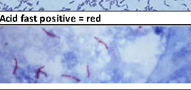
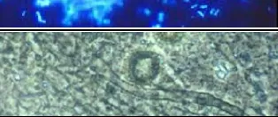
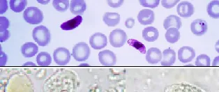
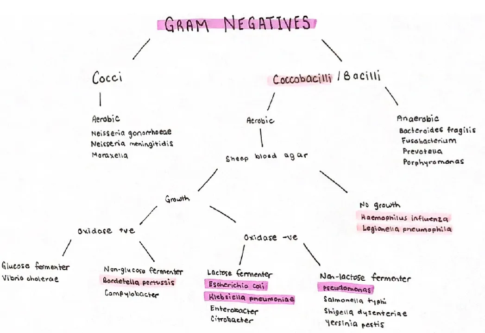
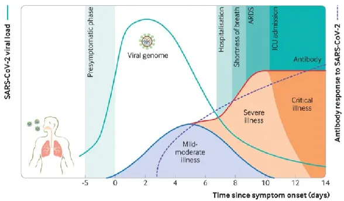
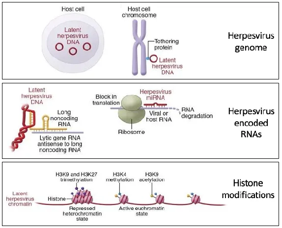
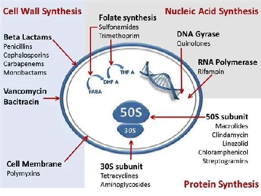
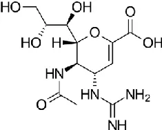

Week 13: Microbes, antimicrobials and infection control
How the micro lab finds a pathogen, what the main microbes look like, how the drugs work, and how we stop spread. Read a tab top to bottom, then test yourself at the end.
Lectures this week
- Utilizing the microbiology lab (AlMutawa)
- Interpreting micro tests (AlMutawa)
- Classification of microbes (AlMutawa, Troyer, Devlin)
- Understanding the human microbiome (Devlin)
- Infection foundations: antibiotics
- Antifungal and antiviral agents
- Basics of transmission of infectious agents
- Introduction to infection control
- Outbreak management (Summers)
Micro lab and specimens
A result is only as good as the specimen. This tab covers what the lab does, how a specimen moves through it, and what to send for each infection.
What the micro lab does
The micro lab cultures, examines and identifies microorganisms: bacteria, fungi, yeasts and more. A medical microbiologist leads a team of a manager, a coordinator, laboratory technologists and laboratory assistants. It serves hospitals, long-term care facilities and physicians' offices.
Sections
- Bacteriology
- Mycology
- Virology
- Parasitology
- Serology
- Molecular
Roles
- Diagnosis of infectious diseases
- Treatment of infectious diseases
- Infection control
- Public health
Sources: Microbiology Lab Utilization and Interpreting Micro Tests (AlMutawa), Nicole's Notes pp. 119 to 120
A specimen's journey: the three phases of testing
Every test passes through three phases. The pre-analytic phase happens before the specimen reaches the lab, so it is the part you control at the bedside.
Pre-analytic
Positive identification, patient preparation, sample collection, sample integrity
Analytic
The actual testing: standardization, operator competence, analysis, quality assurance
Post-analytic
Result printing, interfacing, reporting, communicating
Why it matters
Proper specimen management is the key to an accurate lab diagnosis. It drives therapeutic decisions and antibiotic stewardship, and it affects infection control, length of stay and hospital and lab costs.
The Laboratory Test Information Guide (LTIG) tells you how to collect each test: its purpose and limits, who to test, when to collect (for example before antimicrobials), the best site and method, the transport medium, time and temperature, how to hold it if it cannot travel right away (for example 4°C for 24 hours), the minimum volume, whether it is done on site, the turnaround time and how results are reported.
The lab rejects a specimen that is:
- Unlabeled, mislabeled or incompletely labeled
- Too small for the test (quantity not sufficient)
- In the wrong transport medium or on the wrong swab
- Mishandled for temperature, timing or storage
- From the wrong site for the test requested
- Leaking from its container
Sources: Microbiology Lab Utilization and Interpreting Micro Tests (AlMutawa), Nicole's Notes pp. 119 to 120
Rules for every specimen
Must know
- Collect BEFORE antibiotics are given, so the culture can still grow the organism.
- Collect from the site of infection, in enough quantity for the tests you order.
- Avoid contamination with normal flora.
- Send a specimen, not a swab, when you can.
- Label it fully (identifiers and clinical information) and deliver it to the lab as soon as possible.
The lab only runs susceptibility testing on clinically significant isolates, not on every organism that grows. Its job is to report results that are accurate, significant and clinically relevant, and to avoid the background noise of commensal flora.
Sources: Microbiology Lab Utilization and Interpreting Micro Tests (AlMutawa), Nicole's Notes pp. 119 to 120
What to send for each infection
| Infection | Specimen | How to collect | Notes |
|---|---|---|---|
| Bacteremia | Blood | Venipuncture | 2 specimens (sets) |
| Meningitis | CSF | Lumbar puncture | Also send blood cultures |
| Pneumonia | Sputum | BAL, tracheal aspirate, NPS | Serology and antigen tests help |
| Gastroenteritis | Stool | Culture, PCR, microscopy | |
| UTI | Urine | Suprapubic aspiration, catheter, mid-stream | Never from the collection bag |
| Wound | Tissue | Deep wound swab | Technique matters |
| Joint or any sterile site | Fluid, tissue |
Sources: Microbiology Lab Utilization and Interpreting Micro Tests (AlMutawa), Nicole's Notes pp. 119 to 120
Blood cultures
Blood cultures are drawn in sets by venipuncture. Five things decide their quality: the volume, the number of sets, the timing, skin preparation and the method.
Must know
- The volume of blood collected is the most critical factor.
- Disinfect the venipuncture site.
- Draw before antimicrobial therapy starts.
- Catheter-drawn cultures have a higher risk of contamination.
- Never send a catheter tip without a blood culture drawn by venipuncture.
When a bottle turns positive, the lab reports the time to positivity, the Gram stain (for example gram-positive cocci in chains, gram-negative bacilli or yeast) and then the organism. You then decide: real pathogen or contaminant?
Probable contaminant
- Skin flora in only one of several sets: Bacillus (not anthracis), Corynebacterium, Propionibacterium acnes, coagulase-negative staphylococci
- Several organisms in one of several sets
- The clinical picture does not fit sepsis
- A different organism from the one at the primary site
- Long time to positivity
Probable pathogen
- The same organism in repeated cultures
- Certain organisms when endocarditis is suspected, for example enterococci
- Organisms that are not known contaminants, for example Enterobacteriaceae
- Commensal flora in several sets, or in an immunocompromised patient or one with a prosthetic device
Sources: Microbiology Lab Utilization and Interpreting Micro Tests (AlMutawa), Nicole's Notes pp. 119 to 120
CNS infections
CNS infections include meningitis, encephalitis, focal brain infections, shunt infections, subdural empyema and epidural abscess. Microbes reach the CNS four ways: hematogenous spread, direct spread from a nearby infected site, anatomic defects in CNS structures, and travel along nerves.
- Draw blood cultures if you suspect meningitis.
- Do the LP before antibiotics whenever possible.
- Collect 3 to 4 tubes of CSF, as much as possible (at least 0.5 to 1 mL).
- Send tube #2 or #3, not #1, for bacterial culture and molecular testing.
- Tell the lab if you suspect an unusual organism, and transport it fast.
Bacterial
Culture
Viral
PCR for enteroviruses and herpesviruses (HSV 1 and 2, VZV)
Fungal
Antigen detection for Cryptococcus
Sources: Microbiology Lab Utilization and Interpreting Micro Tests (AlMutawa), Nicole's Notes pp. 119 to 120
Respiratory infections
Microbes reach the lung by aspiration, inhalation (aerosols, for example TB) or hematologic seeding. Pneumonia is diagnosed by putting three things together: the clinical picture, the radiograph (consolidation) and microbiology (culture, molecular, antigen detection, serology).
Community-acquired (CAP)
- Cough, fever, CXR infiltrate
- Risks: age, lung, heart or liver disease, preceding influenza, alcohol use, immunosuppression (HIV, steroids)
- Organisms: the common pathogens
Hospital-acquired (HAP)
- Cough, fever, CXR infiltrate, but features vary
- Risks: ICU, mechanical ventilation, aspiration (dysphagia), colonization, higher gastric pH, immunosuppression, poor glucose control
- Organisms: gram-negatives
Sputum is screened with a Gram stain first. The lab accepts or rejects it based on quality, because a poor sample mostly shows mouth flora. Viral pathogens are found by PCR on a nasopharyngeal swab (influenza A and B, RSV, adenovirus, metapneumovirus, enterovirus, parainfluenza 1 to 4, rhinovirus, bocavirus, coronavirus). Fungi are found by culture, antigen or serology.
| Common pathogens | |
|---|---|
| Bacterial | S. pneumoniae, S. aureus, Haemophilus influenzae, Mycoplasma pneumoniae |
| Viral | Influenza A and B, RSV, adenovirus, metapneumovirus, enterovirus, parainfluenza, rhinovirus, bocavirus, coronavirus |
| Fungal | Histoplasma capsulatum, Coccidioides immitis, Cryptococcus neoformans, Aspergillus |
Sources: Microbiology Lab Utilization and Interpreting Micro Tests (AlMutawa), Nicole's Notes pp. 119 to 120
Urine
Four infection types: asymptomatic bacteriuria, urethritis, cystitis and pyelonephritis. The cleanest specimen wins:
Suprapubic aspiration
Cleanest (gold standard)
In and out catheter
Clean-catch midstream
Uropathogens
- Gram-negative bacilli
- S. aureus
- S. saprophyticus
- Large-colony beta-hemolytic streptococci
- Enterococcus
Urogenital and skin flora
- Most streptococci
- Lactobacillus
- Coagulase-negative staphylococci
- Diphtheroids
- Gardnerella, anaerobes
Exam trap
Asymptomatic bacteriuria is bacteria in the urine without symptoms. Do not treat it, except in pregnancy, before an invasive urinary tract procedure, and in children with vesicoureteral reflux.
Sources: Microbiology Lab Utilization and Interpreting Micro Tests (AlMutawa), Nicole's Notes pp. 119 to 120
Gastroenteritis
Common causes of gastroenteritis
- Bacteria
- Salmonella
- Shigella
- Yersinia
- Campylobacter
- E. coli O157
- C. difficile
- Viruses
- Norovirus
- Rotavirus
- Adenovirus
- Parasites
- Giardia
- Cryptosporidium
Each group has its own test: bacterial culture (Salmonella, Shigella, Campylobacter, Yersinia, E. coli O157), viral PCR, ova and parasite exam, and a separate C. difficile test.
Clinical pearl
An 81-year-old man has abdominal pain and diarrhea two weeks after ceftriaxone for pneumonia. Order a C. difficile test.
Sources: Microbiology Lab Utilization and Interpreting Micro Tests (AlMutawa), Nicole's Notes pp. 119 to 120
Skin and soft tissue
Primary skin infections include cellulitis, ecthyma, impetigo, folliculitis, furunculosis and erysipelas. They are usually S. aureus and/or S. pyogenes (group A strep), and the diagnosis is clinical. Normal skin flora includes coagulase-negative staphylococci (for example S. epidermidis) and P. acnes, so a surface swab grows noise.
Must know
- Do not label a specimen "wound" alone. Say where and what.
- The best specimen is a biopsy of the advancing margin of the lesion.
- Do not ask the lab to report everything that grows.
Sources: Microbiology Lab Utilization and Interpreting Micro Tests (AlMutawa), Nicole's Notes pp. 119 to 120
Nicole's Notes, original wording 11 sections
Microbiology Labp. 119
- A laboratory devoted to the culturing, examination, and identification of microorganisms
- Team: medical microbiologist, manager, coordinator, laboratory technologists, laboratory assistance
- Sections: bacteriology, virology, mycology, parasitology, serology, molecular
- Role: diagnosis and treatment of infectious diseases, infection control, public health
Laboratory Test Information Guide (LTIG)p. 119
- Test purpose and limitations
- Patient selection criteria
- Timing of specimen collection
- Optimal specimen collection sites
- Approved specimen collection methods
- Specimen transport medium criteria/transport time/temperature
- Specimen holding instructions if it cannot be transported immediately
- Minimum acceptable volume
- Availability of test
- Turnaround time
- Result reporting procedures
Rejection Criteriap. 119
- Unlabeled/mislabeled/incompletely labeled specimens
- Quantity not sufficient for testing
- Use of an improper transport medium
- Use of improper swab
- Specimen inappropriately handled (temperature, timing, storage)
- Improper collection site for test requested
- Specimen leakage from transport container
Phases of Testingp. 119
| Phase of Testing | Tasks |
|---|---|
| Pre-analytic | Positive identification, patient preparation, sample collection, sample integrity |
| Analytic | Standardization, operator competence, analysis, quality assurance |
| Post-analytic | Result printing, interfacing, reporting, communicating |
Specimen Collectionp. 119
- Should be from the site of infection
- Quantity sufficient for tests requested
- Collect BEFORE antibiotics are given
- Avoid contamination with normal flora
- Number of specimens
- Appropriate swabs/containers
- Always deliver to the laboratory ASAP
- Label specimens accurately – identifiers, clinical information
| Infection | Specimen | Collection Method | Comments |
|---|---|---|---|
| Bacteremia | Blood | Venipuncture | 2 specimens |
| Meningitis | CSF | Lumbar puncture | |
| Pneumonia | Sputum | Bronchoalveolar lavage (BAL), tracheal aspirate, nasopharyngeal swab (NPS) | Serology, Ag |
| Gastroenteritis | Stool | Culture, PCR, microscopy | |
| UTI | Urine | Suprapubic aspiration (cold standard), catheter, mid-stream | Cystoscopy |
| Wound | Tissue | Deep wound swab | Collection technique |
| Joints or any sterile site | Fluid, tissue |
Blood Culturep. 120
- Volume of blood collected is most critical
- Disinfect the venipuncture site
- Catheter-drawn blood cultures have a higher risk of contamination
- Do not submit catheter tips for culture without an accompanying blood culture obtained by venipuncture
CNS Infectionp. 120
- Meningitis, encephalitis, focal infections of brain parenchyma, CNS shunt infections, subdural empyema, epidural abscess
- Routes of infection: hematogenous spread, direct spread from an infected site, anatomic defects in CNS structures, nerves
- Ix: culture, molecular (viral – enterovirus, herpesvirus), Ag detection (fungal – cryptococcus)
- Blood cultures should be obtained if meningitis is suspected
- Inform the microbiology laboratory if unusual organisms are suspected
- Collect 3-4 tubes of CSF by lumbar puncture and submit for bacterial culture and molecular testing
- Collect as much sample as possible
Respiratory Infectionp. 120
- Mechanisms of infection: aspiration, inhalation (aerosols, mycobacterium, TB), hematologic seeding
- Specimen types: sputum, tracheal aspirate, blood culture, urine, serum, bronchial, pleural fluid, biopsy
- Ix: clinical (signs and symptoms), radiographic features (consolidation), microbiology (culture, molecular, Ag detection, serology)
| Common Pathogens | |
|---|---|
| Bacterial | S. pneumoniae, S. aureus, Haemophilus influenzae, Mycoplasma pneumoniae |
| Viral | Influenza A, Influenza B, RSV Adenovirus, Metapneumovirus, Enterovirus, Parainfluenza 1/2/3/4 Rhinovirus, Bocavirus, Coronavirus |
| Fungal | Histoplasma capsulatum, Coccidioides immitis, Cryptococcus neoformans, Aspergillus |
| Community Acquired Pneumonia | Hospital Acquired Pneumonia | |
|---|---|---|
| Presentation | Cough, fever CXR infiltrate | Cough, fever, CXR infiltrate Variable clinical features |
| Risk | Age, comorbidities (pulmonary, cardiac, liver disease), preceding influenza, alcohol abuse, immunosuppression (HIV, steroids) | ICU admission, mechanical ventilation, aspiration risk (dysphagia), microbial colonization, increased gastric pH, immunosuppression, poor glycemic control |
| Organisms | Common pathogens | Gram-negative organisms |
Gastroenteritisp. 120
- Ix: culture (bacterial), PCR (viral), ova and parasite test, Clostridium difficile test
| Common Pathogens | |
|---|---|
| Bacterial | Salmonella, Shigella, Yersinia, Campylobacter, E. coli O157, C. difficile |
| Viral | Norovirus, Rotavirus, Adenovirus |
| Fungal | Giardia, cryptosporidium |
Skin and Soft Tissue Infections (SSTIs)p. 120
- Primary cutaneous infections: cellulitis, ecthyma, impetigo, folliculitis, furunculosis, erysipelas
- Do not use the label “wound” alone
- The specimen of choice is a biopsied sample of the advancing margin of the lesion
- Do not ask the laboratory to report everything that grows
Antimicrobial Susceptibilityp. 120
- Susceptibility testing: used to produce antimicrobial susceptibility profiles and detect resistance to therapeutic agents
- Standardization: optimizes bacterial growth, optimizes conditions, maintains reproducibility
- Breakpoint: minimal inhibitory concentration (MIC) or zone diameter value used to categorize S, SDD, I, R, NS
- Interpretive category: derived from microbiological characteristic, PK-PD parameters, and clinical outcome data
| Category | MIC | Zone | |
|---|---|---|---|
| Susceptible | Isolates are inhibited by the usually achievable concentrations of antimicrobial agent when the recommended dosage is used for the site of infection | ≤ 4 | ≥ 20 |
| Intermediate | Isolates with antimicrobial agent MICs that approach usually attainable blood and tissue levels and for which response rates may be lower than for susceptible isolates; implies clinical efficacy in body sites where the drugs are physiologically concentrated or when a higher-than-normal dosage of a drug can be used | 8-16 | 15-19 |
| Resistant | Isolates are not inhibited by the usually achievable concentrations of the agent with normal dosage schedules | ≥ 32 | ≤ 14 |
Quick recall
Answer in your head, then check.
Before antibiotics are given.
The volume of blood collected.
Probable contaminant: skin flora in only one of several sets.
Tube #2 or #3, not #1.
Pregnancy, before an invasive urinary procedure, and children with vesicoureteral reflux.
A biopsy of the advancing margin of the lesion.
Lab tests
Five ways the lab looks for a microbe, what each one tells you, and how to read the result.
Direct or indirect?
Direct tests look for the microbe itself. Indirect tests look for the patient's antibody response to it.
Diagnostic tests
- Direct (presence)
- Microscopy
- Culture
- Molecular (PCR)
- Antigen detection
- Indirect (antibody)
- Serology
| Culture | Serology | Molecular | |
|---|---|---|---|
| Method | Direct | Indirect | Direct |
| Depends on | Specimen quality | Timing of specimen | The target chosen |
| Speed | Not rapid | Relatively quick | Rapid |
| Susceptibility? | Yes | No | No |
| Proves | A living pathogen is growing | Exposure to the organism | Organism DNA or RNA is present |
Sources: Microbiology Lab Utilization and Interpreting Micro Tests (AlMutawa), Nicole's Notes p. 121
Microscopy and stains
Microscopy gives a fast first look: a rapid preliminary or final ID, more than one organism in a sample, organisms that are hard to culture, the quality of the specimen, and a guide to which tests to run next. Types include light microscopy, fluorescence microscopy, dark field and electron microscopy.
The Gram stain sorts bacteria by their cell wall in four steps:
Crystal violet
Primary stain. Everything turns purple.
Gram's iodine
Mordant. Locks the dye in.
Alcohol or acetone
Decolorizer. Washes dye out of thin walls.
Safranin
Counterstain. Decolorized cells turn pink.
Gram-positive = purple
Thick peptidoglycan holds the crystal violet.
Gram-negative = pink
Thin peptidoglycan loses the violet and takes up safranin.
The Gram stain also tells you shape and arrangement. Cocci come as clusters (staphylococci), chains (streptococci), diplococci or tetrads. Bacilli come as diplobacilli, chains, coccobacilli or fusiform (pointed ends). Spirochetes are spiral. In a sputum or wound sample it also judges specimen quality and helps separate colonization from infection.
| Stain | Finds | Reads as |
|---|---|---|
| Acid-fast (Ziehl-Neelsen) | Mycobacteria, corynebacteria | Carbol fuchsin, acid alcohol, methylene blue. Acid-fast positive = red, negative = blue |
| Auramine-rhodamine | Acid-fast bacilli | Fluorescence stain |
| Calcofluor white | Fungi | Fluorescence stain |
| KOH | Fungi | |
| Giemsa (Wright-Giemsa) | Parasites | |
| Wet preparation | No stain |
Sources: Microbiology Lab Utilization and Interpreting Micro Tests (AlMutawa), Nicole's Notes p. 121
Culture
Culture grows the microbe so the lab can identify it and test drugs against it. Media come as liquid (liquid = broth) or solid (solid = agar plate), and as nutritive (general purpose), enrichment, selective or differential.
1Streak
Sterile loop spreads the specimen to isolate single colonies
2Incubate
Usually 35°C and 5% CO2
3Read
First look at 24 h (aerobes). Anaerobes need 48 h.
4Identify
Phenotypic, molecular or MALDI-TOF mass spectrometry
5Test drugs
Susceptibility on significant isolates
Culture is the only routine test that proves a living pathogen and gives susceptibility results. It also helps separate infection from contaminants or colonizers. The trade-off is time.
Sources: Microbiology Lab Utilization and Interpreting Micro Tests (AlMutawa), Nicole's Notes p. 121
Susceptibility testing: S, I or R
Antimicrobial susceptibility testing tells you which drugs will work. Methods: broth dilution, agar dilution, disk diffusion, and automated systems. Standardization keeps results reproducible.
The minimum inhibitory concentration (MIC) is the lowest drug concentration that stops growth. In disk diffusion, a drug disk sits on a lawn of bacteria and the clear zone around it is measured. A breakpoint is the MIC or zone value that sorts an isolate into a category. The interpretive category comes from the microbe, pharmacokinetic-pharmacodynamic data and clinical outcomes.
Example breakpoints from the lecture
Susceptible
MIC ≤ 4 · zone ≥ 20 mm
Intermediate
MIC 8 to 16 · zone 15 to 19 mm
Resistant
MIC ≥ 32 · zone ≤ 14 mm
Exam trap
MIC and zone run in opposite directions. A low MIC and a wide zone both mean susceptible.
- Susceptible: inhibited by the usually achievable drug levels at the recommended dose for that site.
- Intermediate: MIC near attainable blood and tissue levels, with lower response rates. It can still work where the drug concentrates or at a higher dose.
- Resistant: not inhibited by usually achievable levels at normal doses.
Sources: Microbiology Lab Utilization and Interpreting Micro Tests (AlMutawa), Nicole's Notes p. 121
Molecular tests (PCR)
Molecular tests analyse nucleic acid directly, with or without amplification. Polymerase chain reaction (PCR) copies a target sequence over and over:
Denature
95°C. DNA strands separate.
Anneal
68°C. Primers bind the target.
Elongate
72°C. Polymerase builds new strands.
Strengths
- Finds nonviable organisms
- Finds organisms that cannot be grown or are very hard to grow
- Fast for slow growers
- Finds previously unknown agents
- Measures how much organism is present (load)
Limits
- Only finds what the primers target
- No live organism left for further testing
- False negatives (interfering substances)
- Cannot tell colonization from infection
PCR fits best when one or two pathogens cause most cases, no further characterization is needed, other methods are poor or slow, or you need to measure load.
Sources: Microbiology Lab Utilization and Interpreting Micro Tests (AlMutawa), Nicole's Notes p. 121
Antigen detection and serology
Antigen detection finds parts of the microbe in the specimen with immunochemical methods such as an Enzyme-linked immunoassay (ELISA). Cryptococcal antigen in CSF is an example.
Serology finds the patient's antibodies to a microbe. It proves exposure, not current infection, so timing matters. Signs of a recent infection: a change between acute and convalescent sera, or a fourfold rise in titre (for example 1:8 to 1:32). Watch for cross-reacting antibodies.
IgM
Appears first. One acute serum at the onset of illness is enough.
IgG
Appears later and lasts. Needs paired acute and convalescent sera, the second 2 to 6 weeks after onset.
| IgM | IgG | Interpretation (hepatitis A example) |
|---|---|---|
| – | + | Immunity |
| + | + | Acute or recent infection |
| + | – | Acute or recent infection, or a non-specific reaction |
Sources: Microbiology Lab Utilization and Interpreting Micro Tests (AlMutawa), Nicole's Notes p. 121
Nicole's Notes, original wording 1 section
Microbiology Diagnostic Methodsp. 121
| Diagnostic Test | Principles | |||||||
|---|---|---|---|---|---|---|---|---|
| Direct (presence) | Microscopy | The use of a microscope to magnify objects too small to be visualized with the naked eye -Characterization of organisms that have been cultivated in the laboratory - Light microscopy, fluorescence microscopy, dark field, electron microscopes -Rapid preliminary/final organism identification, detection of different organisms present in the same specimen, detection of organisms not easily cultivated in the laboratory, evaluation of patient specimens, determination of an organism’s clinical significance, provide preculture information, determine which tests and methods should be used | ||||||
| Gram stain (bacteria) -Primary stain: crystal violet -Mordant: Gram’s iodine -Decolorizer: alcohol/acetone -Counter stain: safranin | - Cocci: staphylococci (clusters), streptococci (chains), diplococci, tetrads - Bacilli: diplobacilli, streptobacilli (chains), coccobacilli, fusiform bacilli (pointed ends) - Spirochetes | |||||||
| Gram-positive = purple | Gram-negative = pink | |||||||
| Acid fast stain (mycobacteria, corynebacteria) -Primary stain: red carbol fuchsin -Decolorizer: acid alcohol -Counter stain: methylene blue/malachite green | Acid fast positive = red | Acid fast negative = blue | ||||||
| Ziehl-Neelsen stain | ||||||||
| Fluorescence stain | Auramine-Rhodamine – acid fast bacilli Calcofluor White – fungi | |||||||
| KOH (fungi) | ||||||||
| Giemsa stain (parasites) | ||||||||
| Wet preparation (no staining) | ||||||||
| Culture | A method of multiplying microorganisms by letting them reproduce in culture medium under controlled laboratory conditions -Growth media: liquid = broth, solid = agar plate; nutritive (general purpose), enrichment, selective, differential -Specimen is streaked using a sterile loop onto solid media, the plate is incubated at the appropriate temperature (35 ° C) and atmosphere (5% CO), and then examined (24 hours = aerobes, 48 hours = anaerobes) 2 -Shape: punctiform (pinpoint), circular, filamentous, irregular, rhizoid, curled -Elevation: flat, raised, convex, umbonate, umbilicate, growth into media -Margin: entire (smooth), irregular, filamentous -Identification methods: phenotypic, molecular, matrix-assisted laser desorption/ionization-time of flight mass spectrometry Antimicrobial susceptibility testing: the procedures used to produce antimicrobial susceptibility profiles and detect resistance to therapeutic agents | |||||||
| Molecular | Direct manipulation and analysis of nucleic acid sequency – amplification, non-amplification Polymerase chain reaction (PCR) – denature (95 ° C), anneal (68 ° C), elongate (72 ° C) -Applications: 1 or 2 pathogens cause the majority of infections, no further characterization is required, no reliable/suboptimal diagnostic methods, reliable diagnostic methods exist but are slow, quantitation of infectious agent burden -Advantages: detect organisms that are nonviable, cannot be grown in culture, extremely difficult to grow, slow growing, previously unknown; quantitate infectious agent burden in patient specimens -Disadvantages: detects only primer-targeted organisms, no cultured organism is available if subsequent characterization beyond identification is necessary, false negatives, no differentiation between colonization vs. infection | |||||||
| Antigen detection | Direct detection of microorganisms in patient specimens using immunochemical methods Enzyme-linked immunoassay (ELISA) | |||||||
| Indirect (antibody) | Serology | Detection of the presence of antibodies to a particular infectious agent -Interpretation: change in antibody (acute and convalescent sera), fourfold rise in titer, cross-reacting antibodies | ||||||
| IgM: single acute sera | IgG: acute and convalescent sera | Interpretation | ||||||
| Collect at the onset of illness | Collect 2-6 weeks after onset | |||||||
| – | + | Immunity | ||||||
| + | + | Acute/recent infection | ||||||
| + | – | Acute/recent infection or non-specific reaction |






Bacteria à acute and chronic infections
- Bacteria: prokaryotic cells that divide asexually by binary fission
| Gram-Positive | Gram-Negative | |
|---|---|---|
| Peptidoglycan | Thick layer on surface of bacteria | Thin layer between inner and outer membrane |
| Membrane | Phospholipid bilayer membrane | Inner and outer membrane |
| Accessory proteins | Cell-surface proteins anchored to peptidoglycan | Porin proteins in outer membrane control permeability |
| Endotoxins | Lipoteichoic acid Engages TLR2 | Lipopolysaccharide (outer membrane) Engages TLR4 |
| Clinical significance | Thick outer membrane makes it resistant to penicillin |
- Peptidoglycan is comprised of N-acetyl glucosamine (GlcNac) and N-acetyl muramic acid (MurNac)
- MurNac has a pentapeptide – crosslinking occurs between the D-Ala in one strand and Lysine (gram-positive) or mDap (gram- negative) in an adjacent strand to provide structural rigidity to the cell wall
| Gram-Positive | Gram-Negative | Not Seen on Gram Stain | ||||||||
|---|---|---|---|---|---|---|---|---|---|---|
| Cocci | Bacilli | Cocci | Bacilli | |||||||
| Aerobes | Staphylococcus S. aureus S. epidermidis S. saprophyticus S. lugdunensis Streptococcus S. pneumoniae S. pyogenes (GAS) S. agalactiae (GBS) Enterococcus E. faecalis E. faecium | Listeria B. anthracis (spore) Corynebacterium Nocardia (branching) | Neisseria N. gonorrhoeae N. meningitidis Moraxella | Vibrio cholerae Bordetella pertussis Campylobacter Escherichia coli Klebsiella pneumoniae Enterobacter Citrobacter Pseudomonas Salmonella typhi Shigella dysenteriae Yersinia pestis Haemophilus influenzae Legionella pneumophila Proteus Enterobacter | ||||||
| Anaerobes | Finegoldia Peptostreptococcus | Clostridium C. difficile C. perfringens C. tetani C. botulinum Lactobacillus Actinomyces (filamentous) Propionibacterium | Bacteroides fragilis Fusobacterium Porphyromonas Prevotella | Obligate intracellular | ||||||
| Rickettsia rickettsii Chlamydia trachomatis Coxiella burnetii | ||||||||||
| No cell wall | ||||||||||
| Mycoplasma | ||||||||||
| Spirochaete | ||||||||||
| Treponema pallidum Borrelia burgdorferi Leptospirosis Helicobacter pylori` |
Quick recall
Answer in your head, then check.
Crystal violet, Gram's iodine, alcohol or acetone decolorizer, safranin.
Their thick peptidoglycan holds the crystal violet.
Red. Acid-fast negative is blue.
Susceptible.
It only finds primer-targeted organisms, leaves no live isolate, can give false negatives, and cannot separate colonization from infection.
IgG: acute and convalescent sera 2 to 6 weeks apart. IgM needs one acute serum.
Bacteria
How bacteria are named and sorted, the cell wall that decides the Gram stain, and the organisms Nicole lists as high yield.
Naming and sorting microbes
Taxonomy has three parts: classification (grouping by shape, physiology and genetics), nomenclature (naming) and identification (matching an organism's features to known profiles). It links diseases to organisms, tracks outbreaks, finds new resistance and new pathogens, and guides new tests and drugs.
Names have two parts. The genus starts with a capital, the species with a lower-case letter: Streptococcus pneumoniae, or S. pneumoniae.
SpeciesGenusFamilyOrderClassPhylumKingdom
The big split in biology is prokaryote versus eukaryote: eukaryotes have membrane-enclosed organelles, prokaryotes do not. Bacteria are prokaryotes, about 0.25 to 1 µm wide and 1 to 3 µm long, and divide asexually by binary fission. Shapes: cocci (round), coccobacilli (ovoid), bacilli (rods), fusiform (pointed ends), curved and spiral.
Sources: Classification of Bacteria (AlMutawa), Nicole's Notes pp. 121 to 123
The cell wall: why Gram stain works
| Gram-positive | Gram-negative | |
|---|---|---|
| Peptidoglycan | Thick layer on the surface | Thin layer between inner and outer membranes |
| Membranes | One phospholipid bilayer | Inner and outer membranes |
| Surface proteins | Cell-surface proteins anchored to peptidoglycan | Porin proteins in the outer membrane control permeability |
| Immune trigger | Lipoteichoic acid engages TLR2 | Lipopolysaccharide (LPS) engages TLR4 |
| Clinical point | Thick outer membrane makes it resistant to penicillin |
Peptidoglycan is a mesh of two sugars, N-acetyl glucosamine (GlcNac) and N-acetyl muramic acid (MurNac). Each MurNac carries a short peptide. Cross-links between D-Ala on one strand and Lysine (gram-positive) or mDap (gram-negative) on the next give the wall its rigidity. Beta-lactams attack this cross-linking step (see Antibiotics).
Sources: Classification of Bacteria (AlMutawa), Nicole's Notes pp. 121 to 123
The bacteria map
Sort any bacterium with three questions: Gram-positive or negative? Cocci or bacilli? Does it need oxygen? Some never show on a Gram stain at all.
| Gram-positive cocci | Gram-positive bacilli | Gram-negative cocci | Gram-negative bacilli | |
|---|---|---|---|---|
| Aerobes | Staphylococcus (S. aureus, S. epidermidis, S. saprophyticus, S. lugdunensis). Streptococcus (S. pneumoniae, S. pyogenes GAS, S. agalactiae GBS). Enterococcus (E. faecalis, E. faecium) | Listeria, B. anthracis (spore), Corynebacterium, Nocardia (branching) | Neisseria (N. gonorrhoeae, N. meningitidis), Moraxella | Escherichia coli, Klebsiella pneumoniae, Pseudomonas, Enterobacter, Citrobacter, Proteus, Salmonella, Shigella, Yersinia, H. influenzae, Legionella, Vibrio cholerae, Bordetella pertussis, Campylobacter |
| Anaerobes | Finegoldia, Peptostreptococcus | Clostridium (C. difficile, C. perfringens, C. tetani, C. botulinum), Lactobacillus, Actinomyces (filamentous), Propionibacterium | Bacteroides fragilis, Fusobacterium, Porphyromonas, Prevotella |
Not seen on Gram stain
- Obligate intracellular: Rickettsia rickettsii, Chlamydia trachomatis, Coxiella burnetii
- No cell wall: Mycoplasma
- Spirochaete: Treponema pallidum, Borrelia burgdorferi, Leptospira, H. pylori
Why it matters
These are the "atypicals". They do not show on Gram stain, so you need other tests, and drugs that target the cell wall miss the ones without a wall.
Clinical pearl
Gram-positive cocci in clusters that are catalase positive and coagulase positive = S. aureus. Chains = streptococci.
Sources: Classification of Bacteria (AlMutawa), Nicole's Notes pp. 121 to 123
S. aureus versus group A strep
Both cause skin and soft tissue infections. The big difference: GAS also causes post-infectious immune syndromes.
| Staphylococcus aureus | Streptococcus pyogenes (GAS) | |
|---|---|---|
| Looks like | Gram-positive cocci in clusters. Catalase +, Coagulase + | Gram-positive cocci in pairs and chains. Catalase −, β-hemolytic |
| Skin and soft tissue infections | Cellulitis, abscess | Non-invasive: pharyngitis (strep throat), cellulitis |
| Invasive | Bacteremia, endocarditis, surgical site infection, septic arthritis, vertebral osteomyelitis or discitis | Bacteremia, TSS, necrotizing fasciitis, endometritis |
| Afterwards | Post-infectious syndromes: rheumatic fever (rheumatic heart disease), post-strep glomerulonephritis | |
| Spread | Contact | Droplet and contact |
| Lives in | Nares, axilla, groin. Loves biofilms | Nasopharynx |
| Grabs fibrinogen with | Coagulase (activates prothrombin) and Clumping factors (ClfA, ClfB) | M-protein (also binds IgG and complement regulators) |
| Breaks RBCs with | Alpha-hemolysin | Streptolysin O |
| Hides from immunity with | Protein A (binds IgG the wrong way round) and Chemotaxis Inhibitory Protein Chip (blinds leukocytes to chemokines) | M-protein (IgG, factor H) and SpyCEP (cuts chemokines, fewer neutrophils arrive) |
Staph and endocarditis
Coagulase and clumping factors help build a platelet-fibrin vegetation on a heart valve. Pieces can break off and cause renal infarction.
Strep and rheumatic fever
After repeated infection, antibodies to M-protein can cross-react with heart tropomyosin. That is the autoimmune basis of rheumatic fever. Strains without M-protein get phagocytosed.
Sources: Classification of Bacteria (AlMutawa), Nicole's Notes pp. 121 to 123
Clostridia: spores and toxins
Clostridia are gram-positive, anaerobic, spore-forming bacilli, and many make toxins. A Spore is a dormant, metabolically inactive form built to survive harsh conditions for a long time. It is hard to destroy, which is why C. difficile spreads in hospitals. C. difficile is hard to culture, so it is found by NAAT for the toxin gene or ELISA for its antigen and toxin.
| Species | Disease | How |
|---|---|---|
| C. difficile | Diarrhea, pseudomembranous colitis | TcdA and TcdB enter gut cells and trigger IL-1β, neutrophils, leaky tight junctions, fluid secretion and cell death (TcdB is most potent). Binary toxin: CDTb forms a pore and CDTa enters, wrecking the actin cytoskeleton |
| C. perfringens | Gangrene | Blood flow to a large area is cut off and the tissue dies (greenish black) |
| C. tetani | Tetanus: trismus (lockjaw), risus sardonicus, opisthotonos | Blocks release of inhibitory GABA and glycine, so muscles spasm |
| C. botulinum | Infant, foodborne, wound and iatrogenic botulism: flaccid paralysis | Blocks acetylcholine release, so muscles cannot contract. Sources: honey or dust spores (infants), home-canned food, prison brew |
| C. septicum | Gangrene, sepsis, soft tissue infection | |
| C. sordellii | TSS, gynecological and soft tissue infection |
Exam trap
Tetanus and botulism are opposites. Tetanus blocks the brakes (GABA, glycine), so muscles spasm. Botulism blocks the accelerator (acetylcholine), so muscles go limp.
Sources: Classification of Bacteria (AlMutawa), Nicole's Notes pp. 121 to 123
E. coli and gut invaders
Escherichia coli is a gram-negative, aerobic, oxidase-negative bacillus from the gut. It spreads by contact and contaminated food or water, and causes UTI, colitis, bacteremia and sepsis. Its tip adhesins decide where in the urinary tract it sticks:
Pyelonephritis
PapG binds a galactose-containing glycolipid in the upper tract and kidney. Pyelonephritis = glycolipids.
Cystitis
FimH at the pilus tip binds the bladder mucosa. Cystitis = mannose.
To dodge complement, the O-polysaccharide of LPS blocks the membrane attack complex, and sialic acid capsules (K1, K12) mimic host cells.
Attach
intimin binds Tir, which the bug inserts into the gut cell, building an actin pedestal
Secrete
Shiga toxin (1 A + 5 B subunits)
Enter
B subunits bind Gb3, toxin is endocytosed and travels back through Golgi to ER
Kill
A subunit damages ribosomal RNA, protein synthesis stops, cell dies
Salmonella, Shigella and Yersinia cause colitis by injecting proteins into gut cells. Some trigger uptake by a ruffling mechanism, others drive inflammation (IL-1β).
Sources: Classification of Bacteria (AlMutawa), Nicole's Notes pp. 121 to 123
Mycobacteria
Mycobacteria are acid-fast bacilli (AFB). Their wall is rich in mycolic acid, so the acid-alcohol wash cannot remove the stain. Technically they are gram-positive. They grow slowly, cause chronic infection (TB) and need months to years of treatment.
Workup: mycobacterial culture (stain, then culture, then susceptibility), mycobacterial PCR, and lateral flow assay.
Mycobacteria
- Mycobacterium Tuberculosis Complex
- M. tuberculosis
- M. bovis
- NTM: rapid growers (5 to 7 days)
- M. abscessus
- M. fortuitum
- M. smegmatis
- NTM: slow growers
- M. avium complex (M. avium, M. intracellulare)
- M. kansasii
- M. marinum
- M. gordonae
- Other
- M. leprae
Sources: Classification of Bacteria (AlMutawa), Nicole's Notes pp. 121 to 123
Nicole's Notes, original wording 3 sections
Important Gram-Positive Coccip. 122
- Staphylococcus aureus and Group A Streptococcus (GAS) commonly cause soft tissue infections
| Staphylococcus aureus | Streptococcus pyogenes | |
|---|---|---|
| Classification | Gram-positive cocci in clusters, aerobic Catalase +ve, coagulase +ve | Gram-positive cocci in pairs and chains, aerobic Catalase –ve, 𝛽 -hemolytic |
| Diseases caused | Skin and soft tissue infections: cellulitis, abscess Invasive: bacteremia, endocarditis, surgical site infections, septic arthritis, vertebral osteomyelitis/discitis | Non-invasive: pharyngitis (Strep throat), cellulitis Invasive: bacteremia, TSS, necrotizing fasciitis, endometritis Post-infectious syndromes: rheumatic fever (rheumatic heart disease), post-streptococcal glomerulonephritis |
| Transmission | Contact | Droplet/contact |
| Colonizes | Nares, axilla, groin (skin folds) – loves to form biofilms | Nasopharynx |
| Virulence factors (manipulation of fibrinogen) | Coagulase: secreted protein that binds and activates prothrombin Clumping factors (ClfA, ClfB): cell surface proteins that bind fibrinogen, which causes cells to clump Coagulase and clumping factors contribute to growth of platelet- fibrin vegetation heart valve (platelet activation and adhesion in fibrin matrix), which can break off and cause renal infarction | M-protein: multifunctional cell surface protein that binds fibrinogen, IgG, and complement regulatory proteins M-protein defective strains are susceptible to phagocytosis With recurrent infection, antibodies specific to M-protein (α -helical coiled-coil structure) may develop cross-reactivity to heart tissue tropomyosin and promote auto-immune rheumatic fever |
| Adhesion proteins | Fibronectin, fibrinogen | Fibronectin, fibrinogen |
| Hemolysis (RBC) | Alpha-hemolysin | Streptolysin O |
| Immune evasion | Protein A binds IgG in an orientation that is not favourable to promote phagocytosis Chemotaxis Inhibitory Protein Chip binds chemotaxis receptors on leukocytes, so they cannot follow a chemokine gradient | M-protein: IgG, Factor H Cell envelope protease SpyCEP degrades chemokines, which impairs neutrophil recruitment to the site of infection |
Clostridial Speciesp. 123
- Gram-positive bacilli, anaerobic, spore forming, +/– toxin-producing
- Spore: a unit of sexual or asexual reproduction that may be adapted for dispersal and for survival, often for extended periods of time, in unfavourable conditions; metabolically inactive; hard to destroy
- Ix: nucleic acid amplification test (C. difficile toxin gene), ELISA (C. difficile common antigen, C. difficile toxin); difficult to culture
| Clostridial Species | Diseases Caused |
|---|---|
| Clostridium difficile | Diarrhea; pseudomembranous colitis Large clostridial toxins TcdA and TcdB: enter epithelial cells to cause inflammatory cytokine (IL1-β) and chemokine production, influx of neutrophils, disruption of tight junctions, fluid secretion, and cell death (TcdB is most potent) CDTb binds to epithelial receptor and is endocytosed; CDTb oligomerizes and forms a pore CDTa is translocated through the pore and enters the cytoplasm as the endosome acidifies (vacuolar ATPase); CDTa ribosylates actin, leading to complete destruction of the cellular actin cytoskeleton, loss of cell shape and tight junctions, and cell death |
| Clostridium perfringens | Gangrene: blood flow to a large area of tissue is cut off, causing the tissue to break down and die (greenish-black color) |
| Clostridium tetani | Tetanus – trismus (lock jaw), risus sardonicus (Sardinian grin), opisthotonos (backward arching) Inhibits the release of GABA/glycine; uncontrolled release of neurotransmitter = muscle contractions/spasms |
| Clostridium botulinum | Infant botulism (flaccid paralysis) – gut colonisation, honey contaminated by spores, environmental dust/soil containing spores Foodborne botulism – self-canned products, prison brew (pruno, hooch, moonshine, bootleg) Wound botulism Iatrogenic botulism Inhibits acetylcholine release = no muscle contraction |
| Clostridium septicum | Gangrene, sepsis, soft tissue infections |
| Clostridium sordelli | TSS, gynecological infections, soft tissue infections |
Important Gram Negativesp. 123
| Escherichia coli | |
|---|---|
| Classification | Gram-negative bacilli, aerobic Growth on sheep blood agar, oxidase –ve |
| Diseases caused | UTI Pyelonephritis: PapG adhesion binds to a galactose containing glycolipid in the upper urinary tract and kidney – promotes tissue tropism Cystitis: FimH adhesion at the tip of the pilus structure promotes adhesion to the mucosal surface of the bladder Colitis Bacteremia Sepsis |
| Transmission | Contact, contaminated food/water |
| Colonizes | Gut microbiome |
| Virulence factors | Adhesion: fimbrilae Pyelonephritis = glycolipids Cystitis = mannose |
| Immune evasion | The O-polysaccharide component of gram-negative LPS can prevent assembly of complement membrane attack complex E. coli K12 capsule contains sialic acid which prevents complement activation Uropathogenic E. coli (K1) produce sialic acid capsule (mimicry) |
| Shiga toxin- producing E. coli (STEC) E. Coli O157:H7 | Adhesion protein intimin is secreted into the membrane of intestinal epithelial cells (Tir) and forms an actin pedestal structure from which the bacteria secrete Shiga toxin (B subunit pentamer + A subunit toxin component) The B subunit binds to globotriaosylceramide (Gb3) on the epithelial membrane and the toxin is internalized through endocytosis The vesicle enclosed toxin undergoes retrograde transport through the Golgi apparatus to the endoplasmic reticulum, where the toxin component is shed from the vesicle, and glycosylates ribosomal RNA, leading to inhibition of protein synthesis and cell death |
- Salmonella, Shigella, and Yersinia cause colitis by injecting proteins into intestinal epithelial cells; some of these promote uptake through a ruffling mechanism, and others promote inflammation (IL-1 β production)
Mycobacteria à chronic infections
- Mycobacteria / acid-fast bacilli (AFB): high mycolic acid content in cell wall – technically gram-positive bacteria
- o “Acid fast” as washout phase with acid-alcohol is ineffective
- Ix: mycobacterial cultures (stain, culture, susceptibility); molecular (mycobacterial PCR); lateral flow assay
| Mycobacterium Tuberculosis Complex | Non-Tuberculous Mycobacteria (NTM) | ||
|---|---|---|---|
| M. tuberculosis M. bovis | Rapid growers (5-7 days) M. abscessus M. fortuitum M. smegmatis | Slow growers Mycobacterium avium complex M. avium M. intracellulare M. kansasii M. marinum M. gordonae | M. leprae |


Viruses à acute and chronic infections
- Viruses: infectious, obligate intracellular parasites composed of DNA or RNA surrounded by a protein coat and/or membrane
- Virions: mature virus particles that can be released into the extracellular environment
- Capsid: protein shell that encases the genome, held together by non-covalent interactions; capsid + genome = nucleocapsid
- Enveloped viruses: have an outer lipid bilayer, acquired by the budding of nucleocapsid through the host cell’s cytoplasmic membrane; glycoproteins are expressed on the surface of the envelope
- Naked viruses: have no envelope and are often more resistant to harsh conditions
- Virus morphology: helical, icosahedral (hollow, symmetrical, quasi-spherical), complex (non-symmetrical)
- Virion components: polymerases, proteases, integrases topoisomerases, capping enzymes, proteins, lipids
- The genome is the key unit that defines the virus
- o Gene products and regulatory signals for replication, assembly and packaging, regulation and timing of the replication cycle, modulation of host defenses, and spread to other cells and host is encoded in the viral genome
- mRNA is always the (+) strand
- DNA of equivalent polarity is also the (+) strand
- Compliments of (+) strands are negative (–) strands
- Virus replication cycle 1. Attachment to cell receptors 2. Entry – penetration into the cytoplasm 3. Uncoating – genome and other contents released from nucleocapsid 4. Protein synthesis – translation of viral mRNA 5. Genome replication – new copies of genome 6. Assembly of new virions 7. Release of new virus from the cell – off to infect a new cell
| Baltimore System of Virus Classification | |||||||||
| Nucleic Acid | Enveloped | Virus Family | Common Viruses | Medical Importance | |||||
| ds DNA virus | No | Adenoviridae | Adenovirus | URTI, conjunctivitis, gastroenteritis | |||||
| No | Papillomaviridae | HPV1,4 HPV6,11 HPV16,18 | Plantar warts Genital warts Cervical/anal dysplasia and cancer | ||||||
| No | Polyomaviridae | JC virus BK virus | Progressive multifocal leukoencephalopathy (PML) Nephropathy in renal transplant | ||||||
| Yes | Herpesviridae | HHV1 = HSV1 HHV2 = HSV2 HHV3 = VZV HHV4 = EBV HHV5 = CMV HHV6 HHV 8 = KSHV | Oral, ocular, and genital herpes; encephalitis Genital, oral, and ocular herpes; encephalitis Chickenpox, shingles Mononucleosis, viral hepatitis Retinitis, pneumonitis, hepatitis, encephalitis Roseola Kaposi’s sarcoma, multicentric Castleman’s disease, body cavity lymphoma | ||||||
| Yes | Poxviridae | Variola | Smallpox | ||||||
| ss DNA virus | No | Parvoviridae | Parvovirus B19 | Erythema infectiosum (Fifth disease) | |||||
| ds DNA retrovirus | Yes | Hepadnaviridae | Hepatitis B | Hepatitis | |||||
| ds RNA virus | No | Reoviridae | Rotavirus | Gastroenteritis | |||||
| (+) ss RNA virus | No | Caliciviridae | Norovirus | Gastroenteritis | |||||
| No | Picornaviridae | Poliovirus Echovirus Rhinovirus Coxsackie virus Hepatitis A | Poliomyelitis URTI, viral meningitis URTI (common cold) Hand-foot-and-mouth (dehydration), viral meningitis, myocarditis Acute hepatitis | ||||||
| Yes | Coronaviridae | Coronavirus | SARS COV-2, SARS COV-1, MERS, URTI | ||||||
| Yes | Flaviviridae | Yellow fever Dengue fever Hepatitis C virus West Nile Zika | Yellow fever Dengue fever Hepatitis Encephalitis, flaccid paralysis Zika virus disease | ||||||
| Yes | Togaviridae | Rubella | Rubella (German measles) | ||||||
| (–) ss RNA virus | Yes | Arenaviridae | Lassa | Lassa fever | |||||
| Yes | Filoviridae | Ebola, Marburg | Hemorrhagic fever | ||||||
| Yes | Orthomyxoviridae | Influenza A, B, C | Influenza | ||||||
| Yes | Paramyxoviridae | Measles Mumps Parainfluenza RSV | Measles Mumps URTI, croup, bronchiolitis Bronchiolitis, pneumonia | ||||||
| Yes | Rhabdoviridae | Rabies | Rabies | ||||||
| (+) ss RNA retrovirus | Yes | Retroviridae | HIV HTLV-1 | AIDS T-cell leukemia and lymphoma |
Fungi à superficial infections
- Fungi: eukaryotic organisms
- Cell wall = mannoproteins, 𝜷 -1,3-glucan, 𝜷 -1,6-glucan, chitin; cell membrane = ergosterol
- Ix: superficial infections = visual assessment, skin scrapings; invasive/deep infections = fungal culture, immunoassay
| Yeasts | Thermally Dimorphic | Moulds |
|---|---|---|
| Unicellular, reproduce by budding | Mould (room temp); yeast-like (body temp) | Multicellular with hyphae |
| Candida Cryptococcus – opportunistic infection Malassezia furfur – pityriasis versicolor (derm) | Histoplasma – histoplasmosis Blastomyces – blastomycosis Coccidioides – Valley fever Paracoccidioides Talaromyces (penicillium) | Aspergillus – opportunistic infection Mucormycetes – mucormycosis (scary-bad) Dermatophytes – athlete’s foot Trichophyton Microsporum Epidermophyton |
à
Parasites varied disease
- Parasite: an organism that lives in or on a host organism and gets its food from or at the expense of its host
- Ix: microscopy (thick/thin smears, stool ova and parasite test), molecular (malaria PCR), antigen detection (BinaxNOW malaria); cultures generally not an option
| Protozoa | Helminths (multicellular) | Ectoparasites | |||||||
|---|---|---|---|---|---|---|---|---|---|
| (unicellular) | Nematodes (round worms) | Trematodes (flukes) | Cestodes (flat/tape worms) | (multicellular) | |||||
| Plasmodium – malaria P. falciparum P. ovale Cyclospora Flagellates Giardia – Beaver Fever Leishmania Trichomonas Sarcodina entamoeba histolytica | Ascaris Ancylostoma – hookworm Necator – hookworm Trichuris – whipworm Strongyloides Tissue filariasis | Schistosoma haematobium Schistosoma mansoni Schistosoma japonicum | Echinococcus Taenia solium | Sarcoptes scabiei – scabies Pediculus – lice Myiasis |
Prions = NOT A MICROBE
- Prions: misfolded proteins with the ability to transmit their misfolded shape onto normal variants of the same protein
- Bovine spongiform encephalopathy (BSE) – cattle
- Chronic wasting disease (CWD) – deer, elk, moose
- Creutzfeldt-Jakob Disease
Quick recall
Answer in your head, then check.
LPS engages TLR4. Lipoteichoic acid engages TLR2.
Their thick outer membrane.
Obligate intracellular (Chlamydia, Rickettsia, Coxiella), no cell wall (Mycoplasma), spirochetes (Treponema, Borrelia).
M-protein. Antibodies to it cross-react with heart tropomyosin.
Tetanus blocks GABA and glycine release (spasm). Botulism blocks acetylcholine release (flaccid paralysis).
PapG, which binds glycolipids. FimH binds mannose in cystitis.
Viruses, fungi, parasites
What a virus is and how it replicates, the viruses Nicole tables in detail, then fungi, parasites and prions.
What a virus is
A virus is an infectious, obligate intracellular parasite: genetic material (DNA or RNA) inside a protein coat and sometimes a membrane. It has two phases: the Virions (the infectious particle outside cells) and the infected cell where it copies itself.
Parts of a virion
- Genome
DNA or RNA. The genome is the key unit that defines the virus.
- Capsid
Protein shell. Capsid + genome = nucleocapsid. Shapes: helical, icosahedral, complex (poxvirus).
- Envelope (some)
Lipid bilayer taken from the host cell as the virus buds out. Glycoproteins on it handle attachment, entry and fusion, and are what neutralizing antibodies and vaccines target.
- Enzymes
Polymerases, proteases, integrases, topoisomerases, capping enzymes
Clinical pearl
Naked viruses have no envelope and are often tougher in harsh conditions. Norovirus and rotavirus are naked, which is why they survive on surfaces and spread through the gut.
Sources: Virus structure, classification and replication (Troyer), Classifying Fungi, Mycobacteria and Parasites (Devlin), Nicole's Notes pp. 123 to 124, 135, 149 to 151
Sorting viruses: the Baltimore system
Every virus must make mRNA that host ribosomes can read. The Baltimore system groups viruses by genome type (DNA or RNA, single or double stranded) and how they get to mRNA. By definition mRNA is the (+) strand, and its complement is (−). RNA to RNA needs an RNA-dependent RNA polymerase. RNA to DNA needs reverse transcriptase.
| Genome | Examples (enveloped?) |
|---|---|
| ds DNA | Adenovirus (no), HPV (no), JC and BK polyomavirus (no), herpesviruses (yes), variola (yes) |
| ss DNA | Parvovirus B19 (no): fifth disease |
| ds DNA, reverse transcribing | Hepatitis B (yes) |
| ds RNA | Rotavirus (no) |
| (+) ss RNA | Norovirus (no), picornaviruses: polio, rhinovirus, coxsackie, hepatitis A (no). Coronaviruses, flaviviruses (hepatitis C, dengue, West Nile, Zika), rubella (yes) |
| (−) ss RNA | Influenza, measles, mumps, RSV, parainfluenza, rabies, Ebola, Lassa (all enveloped) |
| (+) ss RNA, reverse transcribing | HIV, HTLV-1 (yes) |
Sources: Virus structure, classification and replication (Troyer), Classifying Fungi, Mycobacteria and Parasites (Devlin), Nicole's Notes pp. 123 to 124, 135, 149 to 151
How a virus replicates
1Attach
to cell receptors
2Enter
into cytoplasm
3Uncoat
genome released
4Translate
viral proteins made
5Replicate
new genomes
6Assemble
new virions
7Release
off to the next cell
Each step is a drug target. HIV shows this well: it needs a receptor and co-receptor to attach and fuse, reverse transcribes its RNA to DNA, integrates that DNA into the host genome, and needs a protease to make a mature virion. Matching drugs: fusion inhibitors, co-receptor antagonists, reverse transcriptase inhibitors, integrase inhibitors and protease inhibitors. Influenza attaches to sialic acid and needs neuraminidase to leave the cell.
Sources: Virus structure, classification and replication (Troyer), Classifying Fungi, Mycobacteria and Parasites (Devlin), Nicole's Notes pp. 123 to 124, 135, 149 to 151
Respiratory viruses: SARS-CoV-2, influenza, RSV
| SARS-CoV-2 | Influenza | RSV | |
|---|---|---|---|
| Genome | (+) ss RNA, Coronaviridae | (−) ss RNA, Orthomyxovirus | (−) ss RNA, Paramyxovirus |
| Incubation | 4 to 5 days (up to 14) | 2 days (1 to 4) | 4 to 6 days |
| Infectious | 2 to 3 days before symptoms to 10 days after | 1 day before to 5 to 6 days after | 3 to 8 days |
| Secondary cases per case | 1.5 to 4 | 1 | 3 to 8 |
| Spread | Large droplets, small aerosols, surfaces less so | Large droplets, small aerosols, surfaces | Large droplets, surfaces |
| Receptor | ACE2 receptor | Sialic acid | Nucleolin, IGF-1 receptor |
| Key proteins | Spike | Hemagglutinin (HA) and neuraminidase (NA), 8 RNA segments | Glycoprotein (G) and fusion (F) |
| Prevent | Vaccines | Yearly vaccine (3 to 4 strains). PEP: oseltamivir | Palivizumab |
| Treat | Dexamethasone, tocilizumab, remdesivir | Oseltamivir, amantadine, baloxavir | Supportive. Immunocompromised: ribavirin, steroids, IVIg, palivizumab |
Influenza A
- Humans, pigs, horses, birds, marine mammals
- Antigenic shift and drift
- Seasonal, and the cause of pandemics
Influenza B
- Humans only
- Drift only
- Severe disease mostly in elderly or high-risk, no pandemics
Influenza C
- Humans, pigs
- Drift only
- Mild, children, no season
Sources: Virus structure, classification and replication (Troyer), Classifying Fungi, Mycobacteria and Parasites (Devlin), Nicole's Notes pp. 123 to 124, 135, 149 to 151
Herpesviruses: latent for life
Herpesviruses are ds DNA viruses that never leave. After the first infection they go latent: no replication, hidden from the immune system. Triggers such as fever, UV light, stress, tissue injury or immunosuppression cause reactivation back to active, lytic infection.
Primary infection
Active replication, first illness
Latency
Silent in a home tissue
Reactivation
Trigger flips it back to lytic disease
| Virus | Hides in | Primary disease | Reactivation or key notes | Prevent or treat |
|---|---|---|---|---|
| HSV-1 | Dorsal root ganglion | Orolabial herpes, gingivostomatitis, keratitis | Cold sores, encephalitis (temporal lobe), herpetic whitlow | No vaccine. Acyclovir, valacyclovir, famciclovir |
| HSV-2 | Dorsal root ganglion | Genital herpes (6-day incubation) | Neonatal herpes from birth canal lesions | Antivirals, safe sex, C-section |
| VZV | Dorsal root ganglion | Chickenpox (airborne, 14 to 21 days) | Shingles (33% lifetime risk), dermatomal unless disseminated | Vaccine (Shingrix) |
| CMV | WBCs | CMV mononucleosis, congenital infection | Most common cause of congenital abnormalities in Canada: hearing loss, chorioretinitis, microcephaly | Ganciclovir, valganciclovir |
| HHV-6A/B | Roseola: 3 to 5 days of high fever, then rash on neck and trunk | Encephalitis after stem cell transplant | Antivirals | |
| EBV | B cells | Mononucleosis (peaks age 15 to 19): fever, pharyngitis, nodes, big spleen | Lymphomas, leukemia. Monospot detects heterophile IgM | No treatment, steroids for swelling |
| KSHV | Kaposi sarcoma, Castleman disease |
Sources: Virus structure, classification and replication (Troyer), Classifying Fungi, Mycobacteria and Parasites (Devlin), Nicole's Notes pp. 123 to 124, 135, 149 to 151
Fungi
Fungi are eukaryotes with a chitin and glucan cell wall and ergosterol in their membrane, which is the target of most antifungals. Of over 50,000 species, fewer than 150 cause human disease and 25 cause most of it.
Fungi
- Yeasts (70%)
Unicellular, bud. Candida (thrush, vulvovaginitis, diaper rash, invasive infection) and Cryptococcus (meningitis, lung nodules).
- Thermally dimorphic
Mould at room temperature, yeast at body temperature. Histoplasma (bird and bat droppings), Blastomyces (wooded soil), Coccidioides (desert soil), Sporothrix (skin inoculation).
- Moulds
Multicellular with hyphae. Aspergillus, mucormycosis agents (Rhizopus, Mucor), dermatophytes (tinea).
Superficial infections are diagnosed by looking (and sometimes skin scrapings). Invasive infections need fungal culture of tissue, stains, galactomannan or immunoassay. Superficial infections are common in everyone. Invasive ones hit the immunocompromised, and treatment takes months.
Cryptococcus
- C. neoformans: worldwide, trees and bird excreta
- C. gattii: tropics and Pacific Northwest (BC outbreak 1999 to 2010)
- Test: cryptococcal antigen in serum or CSF, culture, HIV test
Aspergillus
- Allergic (ABPA), chronic (aspergilloma), invasive
- Risks: transplant, prolonged neutropenia, high-dose steroids, CGD
- Treat: voriconazole
Mucormycosis
- Thrives in hyperglycemic, acidotic states
- Rhinocerebral form in diabetes (eyes, nose, sinus)
- Treat: amphotericin B and surgery
Tinea names follow the site: capitis = scalp, corporis = body, cruris = groin, pedis = foot, unguium = nails.
Sources: Virus structure, classification and replication (Troyer), Classifying Fungi, Mycobacteria and Parasites (Devlin), Nicole's Notes pp. 123 to 124, 135, 149 to 151
Parasites and prions
A parasite lives on or in a host and feeds at its expense. Cultures are generally not an option, so diagnosis uses microscopy (thick and thin smears, stool ova and parasites), PCR (malaria) and antigen tests (BinaxNOW for malaria).
Parasites
- Protozoa (unicellular)
- Plasmodium: malaria
- Giardia: beaver fever
- Cyclospora
- Leishmania
- Trichomonas
- Entamoeba histolytica
- Helminths (multicellular)
- Nematodes: Ascaris, hookworm, whipworm, Strongyloides
- Trematodes: Schistosoma
- Cestodes: Echinococcus, Taenia solium
- Ectoparasites (skin surface)
- Sarcoptes scabiei: scabies
- Pediculus: lice
- Myiasis
Prions are not microbes. They are misfolded proteins that make normal copies of the same protein misfold. Examples: Creutzfeldt-Jakob disease, bovine spongiform encephalopathy (cattle), chronic wasting disease (deer, elk, moose).
Sources: Virus structure, classification and replication (Troyer), Classifying Fungi, Mycobacteria and Parasites (Devlin), Nicole's Notes pp. 123 to 124, 135, 149 to 151
Putting it together: microbe to differential
| Microbe | Typical pattern |
|---|---|
| Bacteria | Acute infections (sepsis), some chronic. Often need antibiotics |
| Viruses | Acute and chronic. Sometimes self-resolve |
| Fungi | Superficial (tinea, thrush). Invasive in immunocompromised hosts, treated for months |
| Mycobacteria | Chronic (TB). Treated for months to years |
| Parasites | Varied: malaria versus pinworm |
Build the differential in layers: infectious or not, then typical bacteria (gram-positive, gram-negative), atypical bacteria (spirochetes, no cell wall), viruses (DNA, RNA). Add fungi and mycobacteria for immunocompromised hosts, and parasites, mycobacteria and fungi when exposure, travel or immigration history fits.
Clinical pearl
An 88-year-old with fever, cough and lobar consolidation: think typical bacteria first (S. pneumoniae, Moraxella, S. aureus, Klebsiella). Atypicals and viruses less often cause lobar pneumonia. Add Aspergillus and PJP if immunocompromised, TB if exposed.
Sources: Virus structure, classification and replication (Troyer), Classifying Fungi, Mycobacteria and Parasites (Devlin), Nicole's Notes pp. 123 to 124, 135, 149 to 151
Nicole's Notes, original wording 5 sections
Important Gram Negativesp. 123
| Escherichia coli | |
|---|---|
| Classification | Gram-negative bacilli, aerobic Growth on sheep blood agar, oxidase –ve |
| Diseases caused | UTI Pyelonephritis: PapG adhesion binds to a galactose containing glycolipid in the upper urinary tract and kidney – promotes tissue tropism Cystitis: FimH adhesion at the tip of the pilus structure promotes adhesion to the mucosal surface of the bladder Colitis Bacteremia Sepsis |
| Transmission | Contact, contaminated food/water |
| Colonizes | Gut microbiome |
| Virulence factors | Adhesion: fimbrilae Pyelonephritis = glycolipids Cystitis = mannose |
| Immune evasion | The O-polysaccharide component of gram-negative LPS can prevent assembly of complement membrane attack complex E. coli K12 capsule contains sialic acid which prevents complement activation Uropathogenic E. coli (K1) produce sialic acid capsule (mimicry) |
| Shiga toxin- producing E. coli (STEC) E. Coli O157:H7 | Adhesion protein intimin is secreted into the membrane of intestinal epithelial cells (Tir) and forms an actin pedestal structure from which the bacteria secrete Shiga toxin (B subunit pentamer + A subunit toxin component) The B subunit binds to globotriaosylceramide (Gb3) on the epithelial membrane and the toxin is internalized through endocytosis The vesicle enclosed toxin undergoes retrograde transport through the Golgi apparatus to the endoplasmic reticulum, where the toxin component is shed from the vesicle, and glycosylates ribosomal RNA, leading to inhibition of protein synthesis and cell death |
- Salmonella, Shigella, and Yersinia cause colitis by injecting proteins into intestinal epithelial cells; some of these promote uptake through a ruffling mechanism, and others promote inflammation (IL-1 β production)
Mycobacteria à chronic infections
- Mycobacteria / acid-fast bacilli (AFB): high mycolic acid content in cell wall – technically gram-positive bacteria
- o “Acid fast” as washout phase with acid-alcohol is ineffective
- Ix: mycobacterial cultures (stain, culture, susceptibility); molecular (mycobacterial PCR); lateral flow assay
| Mycobacterium Tuberculosis Complex | Non-Tuberculous Mycobacteria (NTM) | ||
|---|---|---|---|
| M. tuberculosis M. bovis | Rapid growers (5-7 days) M. abscessus M. fortuitum M. smegmatis | Slow growers Mycobacterium avium complex M. avium M. intracellulare M. kansasii M. marinum M. gordonae | M. leprae |
Viruses à acute and chronic infections
- Viruses: infectious, obligate intracellular parasites composed of DNA or RNA surrounded by a protein coat and/or membrane
- Virions: mature virus particles that can be released into the extracellular environment
- Capsid: protein shell that encases the genome, held together by non-covalent interactions; capsid + genome = nucleocapsid
- Enveloped viruses: have an outer lipid bilayer, acquired by the budding of nucleocapsid through the host cell’s cytoplasmic membrane; glycoproteins are expressed on the surface of the envelope
- Naked viruses: have no envelope and are often more resistant to harsh conditions
- Virus morphology: helical, icosahedral (hollow, symmetrical, quasi-spherical), complex (non-symmetrical)
- Virion components: polymerases, proteases, integrases topoisomerases, capping enzymes, proteins, lipids
- The genome is the key unit that defines the virus
- o Gene products and regulatory signals for replication, assembly and packaging, regulation and timing of the replication cycle, modulation of host defenses, and spread to other cells and host is encoded in the viral genome
- mRNA is always the (+) strand
- DNA of equivalent polarity is also the (+) strand
- Compliments of (+) strands are negative (–) strands
- Virus replication cycle 1. Attachment to cell receptors 2. Entry – penetration into the cytoplasm 3. Uncoating – genome and other contents released from nucleocapsid 4. Protein synthesis – translation of viral mRNA 5. Genome replication – new copies of genome 6. Assembly of new virions 7. Release of new virus from the cell – off to infect a new cell
| Baltimore System of Virus Classification | |||||||||
| Nucleic Acid | Enveloped | Virus Family | Common Viruses | Medical Importance | |||||
| ds DNA virus | No | Adenoviridae | Adenovirus | URTI, conjunctivitis, gastroenteritis | |||||
| No | Papillomaviridae | HPV1,4 HPV6,11 HPV16,18 | Plantar warts Genital warts Cervical/anal dysplasia and cancer | ||||||
| No | Polyomaviridae | JC virus BK virus | Progressive multifocal leukoencephalopathy (PML) Nephropathy in renal transplant | ||||||
| Yes | Herpesviridae | HHV1 = HSV1 HHV2 = HSV2 HHV3 = VZV HHV4 = EBV HHV5 = CMV HHV6 HHV 8 = KSHV | Oral, ocular, and genital herpes; encephalitis Genital, oral, and ocular herpes; encephalitis Chickenpox, shingles Mononucleosis, viral hepatitis Retinitis, pneumonitis, hepatitis, encephalitis Roseola Kaposi’s sarcoma, multicentric Castleman’s disease, body cavity lymphoma | ||||||
| Yes | Poxviridae | Variola | Smallpox | ||||||
| ss DNA virus | No | Parvoviridae | Parvovirus B19 | Erythema infectiosum (Fifth disease) | |||||
| ds DNA retrovirus | Yes | Hepadnaviridae | Hepatitis B | Hepatitis | |||||
| ds RNA virus | No | Reoviridae | Rotavirus | Gastroenteritis | |||||
| (+) ss RNA virus | No | Caliciviridae | Norovirus | Gastroenteritis | |||||
| No | Picornaviridae | Poliovirus Echovirus Rhinovirus Coxsackie virus Hepatitis A | Poliomyelitis URTI, viral meningitis URTI (common cold) Hand-foot-and-mouth (dehydration), viral meningitis, myocarditis Acute hepatitis | ||||||
| Yes | Coronaviridae | Coronavirus | SARS COV-2, SARS COV-1, MERS, URTI | ||||||
| Yes | Flaviviridae | Yellow fever Dengue fever Hepatitis C virus West Nile Zika | Yellow fever Dengue fever Hepatitis Encephalitis, flaccid paralysis Zika virus disease | ||||||
| Yes | Togaviridae | Rubella | Rubella (German measles) | ||||||
| (–) ss RNA virus | Yes | Arenaviridae | Lassa | Lassa fever | |||||
| Yes | Filoviridae | Ebola, Marburg | Hemorrhagic fever | ||||||
| Yes | Orthomyxoviridae | Influenza A, B, C | Influenza | ||||||
| Yes | Paramyxoviridae | Measles Mumps Parainfluenza RSV | Measles Mumps URTI, croup, bronchiolitis Bronchiolitis, pneumonia | ||||||
| Yes | Rhabdoviridae | Rabies | Rabies | ||||||
| (+) ss RNA retrovirus | Yes | Retroviridae | HIV HTLV-1 | AIDS T-cell leukemia and lymphoma |
Fungi à superficial infections
- Fungi: eukaryotic organisms
- Cell wall = mannoproteins, 𝜷 -1,3-glucan, 𝜷 -1,6-glucan, chitin; cell membrane = ergosterol
- Ix: superficial infections = visual assessment, skin scrapings; invasive/deep infections = fungal culture, immunoassay
| Yeasts | Thermally Dimorphic | Moulds |
|---|---|---|
| Unicellular, reproduce by budding | Mould (room temp); yeast-like (body temp) | Multicellular with hyphae |
| Candida Cryptococcus – opportunistic infection Malassezia furfur – pityriasis versicolor (derm) | Histoplasma – histoplasmosis Blastomyces – blastomycosis Coccidioides – Valley fever Paracoccidioides Talaromyces (penicillium) | Aspergillus – opportunistic infection Mucormycetes – mucormycosis (scary-bad) Dermatophytes – athlete’s foot Trichophyton Microsporum Epidermophyton |
à
Parasites varied disease
- Parasite: an organism that lives in or on a host organism and gets its food from or at the expense of its host
- Ix: microscopy (thick/thin smears, stool ova and parasite test), molecular (malaria PCR), antigen detection (BinaxNOW malaria); cultures generally not an option
| Protozoa | Helminths (multicellular) | Ectoparasites | |||||||
|---|---|---|---|---|---|---|---|---|---|
| (unicellular) | Nematodes (round worms) | Trematodes (flukes) | Cestodes (flat/tape worms) | (multicellular) | |||||
| Plasmodium – malaria P. falciparum P. ovale Cyclospora Flagellates Giardia – Beaver Fever Leishmania Trichomonas Sarcodina entamoeba histolytica | Ascaris Ancylostoma – hookworm Necator – hookworm Trichuris – whipworm Strongyloides Tissue filariasis | Schistosoma haematobium Schistosoma mansoni Schistosoma japonicum | Echinococcus Taenia solium | Sarcoptes scabiei – scabies Pediculus – lice Myiasis |
Prions = NOT A MICROBE
- Prions: misfolded proteins with the ability to transmit their misfolded shape onto normal variants of the same protein
- Bovine spongiform encephalopathy (BSE) – cattle
- Chronic wasting disease (CWD) – deer, elk, moose
- Creutzfeldt-Jakob Disease
Common Respiratory Virusesp. 135
| SARS-CoV-2 | Influenza | RSV | |
|---|---|---|---|
| Virus type | (+) ss RNA virus Coronaviridae family | (–) ss RNA virus Orthomyxovirus family | (–) ss RNA virus Paramyxovirus family |
| Incubation period | 4-5 days (up to 14 days) | 2 days (1-4 days) | 4-6 days |
| Infectious period | 2-3 days pre-symptoms Up to 10 days post-symptoms | 1 day pre-symptoms 5-6 days post-symptoms | 3-8 days |
| Generation time | 4 days | 2-4 days | 7 days |
| Effective reproductive # | 1.5-4 secondary cases per infectious case | 1 secondary case per infectious case | 3-8 secondary cases per infectious case |
| Total cases | Canada: > 1.6 million | Canada 2019-20: 42514 Canada 2021-21: < 100 – masks | |
| Mortality | USA: > 690000 Canada: 27751 | USA 2018-19: 34200 Canada: 500-1500/year | USA: 14000 adult, 500-1000 children <5 |
| Transmission | Large droplets Small particle aerosols Contact/surfaces (less so) | Large droplets (> 5 microns) Small particle aerosols Contact/surfaces | Large droplets Contact/surfaces |
| Binds host receptor | ACE2 receptor (lines respiratory tract) SARS2 binds with higher affinity than SARS1 | Sialic acid (lines respiratory tract) | Nucleolin Insulin-like growth factor 1 receptor |
| URT | Nasal ciliated epithelial cells | Ciliated epithelial cells throughout | Upper airway epithelial cells |
| LRT | Bronchial ciliated epithelial cells Type 1 and 2 alveolar pneumocytes | Ciliated epithelial cells throughout | Bronchial ciliated epithelial cells Type 1 and 2 alveolar pneumocytes |
| Symptom onset | Mild Fever, cough, diarrhea, anosmia, conjunctivitis Dyspnea develops over 5-7 days | Acute | URTI symptoms, loss of appetite Symptoms peak at day 5 of illness Lingering cough – recovery of ciliated cells |
| Multisystem symptoms | Respiratory failure – ARDS GI illness – nausea, diarrhea Cardiac – acute cardiac injury, arrhythmias VTE – stroke, DVT, PE Cytokine storm (Kawasaki-like disease) Neurologic: anosmia, headaches | Primary pneumonia Superimposed bacterial pneumonia Cardiac – acute heart failure, acute ischemic heart disease (myocarditis, pericarditis) CNS: encephalopathy, encephalitis, aseptic meningitis | Middle ear infections |
| PrEP | Vaccines | Vaccine – 3-4 strains, 6 months prior | Palivizumab |
| PEP | Studied multiple medications | Oseltamivir (Tamiflu) | |
| Treatment | Dexamethasone, tocilizumab, remdesivir Studied: hydroxychloroquine (+/– azithromycin, ivermectin, fluvoxamine) | Oseltamivir, amantadine, baloxavir | Supportive care Immunocompromised: ribavirin, steroids, IVIg, palivizumab |
| Strengths | Spike surface protein Replicates well in URT Shed by asymptomatic individuals Immune stimulatory ability is overpowered | Hemagglutinin (HA) and neuraminidase (NA) outer surface proteins Genome has 8 RNA segments Immune avoidance – antigenic shift + drift | Glycoprotein (G) and fusion (F) outer surface proteins Highly infectious Re-infection – many strains |
| Weaknesses | RNA-dependent RNA polymerase (drug target) Low genetic diversity Spike (vaccine target) | Vaccine Neuraminidase (inhibitor target) Preventative measures | Generally causes mild disease Labile – vulnerable to temperature, humidity, drying |
| Influenza A | Influenza B | Influenza C | |
|---|---|---|---|
| Host range | Humans, pigs, horses, birds, marine mammals | Humans only | Humans, pigs |
| Epidemiology | Antigenic shift + drift | Antigenic drift | Antigenic drift |
| Clinical features | Seasonal influenza May cause pandemics with significant mortalities in affected young people | Seasonal influenza Severe disease, generally confined to elderly or high-risk, pandemics not seen | Mild disease, common in children, without seasonality |
| Genome | 8 gene segments | 8 gene segments | 7 gene segments |
| Structure | 10 viral proteins, M2 unique | 11 viral proteins, NB unique | 9 viral proteins, HEF unique |


Important Viruses: Herpesvirusesp. 149
- ds DNA virus
- Latent infection – asymptomatic period following acute infection; no virus replication; hiding from the immune system
- Reactivation – transition from latent to active; lytic infection
- o Triggers: fever, microbial co-infection, UV light, stress, tissue injury, hyperthermia, hormonal imbalance, allogenic stimulation, cytokines, cell differentiation, toxic stimuli
- Active infection – viral replication

Herpesviridaep. 150
| Subfamily | Virus | Latency Site | Transmission | Primary | Reactivation | Notes | Prevention/Treatment | |
|---|---|---|---|---|---|---|---|---|
| Disease | ||||||||
| Alpha (short reproductive cycle, destruct infected cells) | Herpes simplex virus type 1 (HSV-1) | Dorsal root ganglion | Contact Asymptomatic shedding | Orolabial herpes Encephalitis | Cold sores: lips or nose; recurs frequently at same site Gingivostomatitis: inflammation of oral mucosa/gingiva. primarily children, heals in 1-3 weeks; fever, irritability, vesicular lesions Keratitis: corneal ulcers/lesions of conjunctival epithelium; can cause scarring/blindness Encephalitis: necrotic lesions in one temporal lobe; fever, headache, vomiting, seizures, altered mental state Herpes gladiatorum: herpetic whitlow in fingers Clinical Dx, PCR from affected lesion | No vaccine Antivirals: Famciclovir, Acyclovir, Valacyclovir | ||
| Herpes simplex virus type 2 (HSV-2) | Genital herpes | 6-day incubation period Lesions on genitals/anus; can infect oral cavity Neonatal herpes: contact with vesicular lesions in birth canal | Antivirals Safe sexual practices C-section | |||||
| Varicella zoster virus (VZV) | Airborne | Chickenpox | Shingles (33% risk) Disseminated zoster | Chickenpox 14-21 day incubation period Fever, malaise, headache, abdominal pain, skin vesicular rash More severe complications and mortality in adults Shingles Immunity declines over time – incidence increases with age Dermatomal unless disseminated | Vaccine (Shingrix, Zostavax II) | |||
| Beta (enlarged infected cells, multiple latency sites) | Cytomegalovirus (CMV) | WBCs | Body fluids | CMV-mononucleosis Congenital cytomegalic inclusion disease | Most common cause of congenital abnormalities in Canada Common in childhood: 1/3 by age 5, ½ by age 40 Asymptomatic in children, virus sheds in fluids for months Replication in respiratory and intestinal tract cells Infects most body organs TORCHES infection Congenital abnormalities: chorioretinitis, hearing loss, microcephaly, petechia/purpura, jaundice | Antivirals: Ganciclovir, Valganciclovir Pregnancy screening | ||
| Human herpesvirus 6A/B (HHV-6A/B) | Secretions | Roseola infantum -High fever for 3-5 days, followed by rash on the neck and trunk -Generally resolves in 1-2 days | Reactivation during immunosuppression can cause encephalitis in stem cell transplant recipients | Antivirals | ||||
| Human herpesvirus 7 (HHV7) | Less common | |||||||
| Gamma | Epstein-Barr virus (EBV) | Lymphocytes (B cells) | Mononucleosis | Lymphomas, leukemia, lymphoproliferative syndromes | Peaks in 15-19 year olds 4-7 week incubation Fever, pharyngitis, fatigue, lymphadenopathy, splenomegaly Protective antibodies are generated – only get it once Latent stage causes malignancy Serology: EBV IgG/IgM, early antigen, viral capsid antigen, EBV nuclear antigen Monospot test: heterophile IgM antibodies bind to bovine erythrocyte extract | No treatment Steroids for swelling Antivirals for oral leukoplakia | ||
| Kaposi’s sarcoma- associated herpesvirus (KSV) | Kaposi’s sarcoma Castleman disease |
Important Fungip. 151
- There are over 50000 species of fungus, < 150 are recognized causes of human disease, 25 cause the majority of disease
| Species | Yeasts (70%) | Thermally Dimorphic | Moulds | ||||||||
|---|---|---|---|---|---|---|---|---|---|---|---|
| Candida | Cryptococcus | Aspergillus | Rhizopus, Mucor | Dermatophytes | |||||||
| Superficial: oropharyngeal (thrush), esophagitis, vulvovaginitis, balanitis, cutaneous (diaper dermatitis) Invasive: UTI, endocarditis, endophthalmitis, osteoarticular infections, intra-abdominal infections | C. neoformans: distributed worldwide, associated with some trees and bird excreta C. gattii: tropical areas and Pacific Northwest of North America | Histoplasma capsulatum: soil containing bird and bat droppings, inhalation of fungal conidia Blastomyces dermatitidis: warm moist soil of wooded areas rich in decaying organic debris, inhalation of fungal conidia C. immitis / posadasii: dry desert soils of Southwestern North America, inhalation of arthroconidia Sporothrix schenckii: worldwide distribution, direct inoculation of skin with soil/fungi | Over 180 species, 40 cause human disease | Agents of mucormycosis Widely distributed in the environment (soil, plants, decaying organic material) Acquired through skin inoculation or ingestion Thrive in hyperglycemic, acidotic state | Infect the hair, skin, and nails of humans and animals | ||||||
| Epidemiology/ Risk factors | Uncommon before HIV/AIDS epidemic in the 1980s Decreasing since early 2000s due to highly reactive antiretroviral therapy Outbreak of C. gattii in coastal BC from 1999-2010 | Immunocompromised | Allogeneic hematopoietic stem cell/solid organ transplant, prolonged neutropenia, high dose corticosteroids, chronic granulomatous disease | Allogeneic hematopoietic stem cell/solid organ transplant, malignancy, diabetes | |||||||
| Symptoms | Thrush: white plaques with erythematous base when scraped off Vulvovaginitis: white discharge, erythematous mucosa Cutaneous (diaper dermatitis): erythematous skin lesions with satellite lesions | C. neoformans: causes meningitis and pulmonary nodules C. gattii: causes meningitis and pulmonary disease | Histoplasma capsulatum: acute/ chronic pulmonary infections Blastomyces dermatitidis: pulmonary infections, disseminated lesions in skin/bone C. immitis / posadasii: self-limiting fever, acute pneumonia, rheumatologic symptoms, cutaneous lesions, disseminated infections Sporothrix schenckii: skin, subcutaneous, and lymphatic tissue infections; rarely causes disseminated disease | Allergic: allergic bronchopulmonary aspergillosis (ABPA), chronic pulmonary aspergillosis (CPA) Chronic / superficial: pulmonary aspergilloma (fungal ball), otomycosis, onychomycosis, keratitis Invasive aspergillosis: pulmonary, disseminated infection | Cutaneous Rhinocerebral: diabetic presentation (eyes, nose, sinus) Pulmonary GI Disseminated | Tinea capitis = scalp Tinea corporis = body Tinea cruris = jock itch Tinea pedis = athlete’s foot Tinea ungium = nails | |||||
| Ix | Mouth or skin swab for routine culture -Grows within 1-3 days -7 × 5 µ m -Only isolates from normally sterile sites have susceptibility testing performed | Detection of cryptococcal antigen (CrAg) in serum/CSF Blood, CSF, or sputum for routine culture -Pink = urea -Brown = phenoloxidase -Blue = canavanine-glycine bromothymol blue (C. gattii) HIV test | Serology -Cross-reaction between the dimorphic group can occur Fungal culture -Collect blood and BM cultures if disseminated infection suspected ALERT MICROBIOLOGY LAB (special biosafety procedures, except Sporothrix schenckii) | Imaging – chest CT Histopathology/fungal stain Galactomannan antigen testing from blood or bronchoalveolar lavage Fungal culture | Microscopy -Calcofluor white stain of tissue/BAL -6-15 µ m wide irregular hyphae with few septations, twists like ribbon, and 90 ° branching | KOH smear Fungal culture -Skin scrapings, nail clippings, or hair -Place samples in sterile container or folded paper collection kit | |||||
| Treatment | Fluconazole Caspofungin | Amphotericin B + flucytosine Fluconazole | Amphotericin B – severe Itraconazole – mild | Voriconazole (6-12 weeks) Amphotericin B | Amphotericin B (6+ weeks) Posaconazole Isavuconazole Surgery |
Quick recall
Answer in your head, then check.
The nucleocapsid.
They are naked (no envelope), which often makes viruses tougher.
ACE2 for SARS-CoV-2. Sialic acid for influenza.
Influenza A. It infects many animal species, so it can undergo antigenic shift.
Dorsal root ganglion. 33%.
70%. Candida and Cryptococcus.
They are misfolded proteins that spread their shape to normal proteins.
Microbiome
Every body site has its own normal flora. Disease happens when a microbe ends up in the wrong place, or when the whole community shifts.
Microbiome, microbiota and the four states
The Human microbiome is the collection of bacteria, archaea, fungi, parasites and viruses that live in and on the body. Strictly, the microbiome is their collective genomes and the Microbiota is the community of organisms itself. There are about 100 trillion microbes in the gut, and a teaspoon of stool holds 100 billion. Researchers study them with metagenomic or marker-gene (16S) sequencing.
The microbiome shapes innate immunity. Coagulase-negative staph on the skin, for example, produce antimicrobial peptides and limit S. aureus colonization.
Commensal
Microbe in its usual habitat. Staph in the nares.
Coloniser
Microbe in an unusual habitat, not causing disease. Pseudomonas on a chronic wound.
Infection
Microbe causing disease: a commensal in the wrong compartment, or an outside invader. S. aureus through the skin causing cellulitis.
Dysbiosis
A shift in the composition, diversity or metabolites of the microbiome toward a disease pattern. Eczema, bacterial vaginosis.
Must know
Normally sterile sites: bladder (with ongoing urobiome research), bloodstream, CSF and lower respiratory tract. Any growth here means bacteremia, meningitis, bronchitis or pneumonia.
Sources: The Human Microbiome (Devlin), Nicole's Notes p. 126
Site by site
| Site | Normal flora | Infection (compartment breach) | Dysbiosis |
|---|---|---|---|
| Skin | Coagulase-negative staph, S. aureus, streptococci, Corynebacterium, Cutibacterium (Propionibacterium), Lactobacillus | cellulitis, impetigo, erysipelas, abscess (S. aureus, GAS). Colonization: Pseudomonas in wounds | Eczema (fewer CoNS making AMPs) |
| Mouth | Viridans streptococci (cause endocarditis), S. anginosus, oral anaerobes (Peptostreptococcus, Fusobacterium, Parvimonas micra), sometimes yeast | Dental abscess, deep neck space infection. Pharyngitis (GAS, adenovirus). Poor hygiene: plaque, gingivitis | |
| Gut | Gram-negatives (E. coli, Klebsiella, Proteus), anaerobes (Bacteroides), S. anginosus, Enterococcus, Candida | Perforation causes peritonitis (gram-negatives and Bacteroides). Infectious colitis: Salmonella, Shigella, Campylobacter, C. difficile | C. difficile, IBD (UC, Crohn's), IBS |
| Vagina | Lactobacillus | PID (rare, E. coli, anaerobes). Outsider infection: gonorrhea, chlamydia | Bacterial vaginosis, vulvovaginal candidiasis |
The nasopharynx can carry organisms that later cause disease: S. pneumoniae, H. influenzae, Moraxella catarrhalis and S. aureus.
Clinical pearl
Fecal transplant treats recurrent C. difficile, and is being studied in NASH, melanoma and obesity. The microbiome is also linked to IBD, NASH and rheumatoid arthritis.
Sources: The Human Microbiome (Devlin), Nicole's Notes p. 126
Nicole's Notes, original wording 1 section
The Human Microbiomep. 126
- Human microbiome: the collection of bacteria, archaea, fundi, parasites, and viruses that live in and on the body
- Microbiota: the microorganisms that are found within a specific environment
- Sterile sites: bladder (urobiome), blood stream (bacteremia), CSF (meningitis), lower respiratory tract (bronchitis, pneumonia)
| Site | Commensal Microbe in usual habitat | Colonisers | Infection | Dysbiosis | |||
|---|---|---|---|---|---|---|---|
| Microbe in unusual habitat, | Microbe in a site causing disease | A change in the composition, diversity, | |||||
| but not causing disease | (wrong compartment/unusual invader) | or metabolites of the microbiome | |||||
| Skin | Staphylococcus Streptococcus Propionibacterium Corynebacterium Lactobacillus Candida | Wounds colonized with pseudomonas | Compartment breach – cellulitis, impetigo, erysipelas, abscess Staphylococcus aureus, GAS | Eczema (less CNST producing AMP) | |||
| Mouth | Streptococcus pneumoniae Streptococcus anginosus Peptostreptococcus Fusobacterium Parvimonas micra Candida | Staphylococcus aureus Streptococcus pneumoniae Moraxella catarrhalis Haemophilus influenza | Compartment breach – dental abscess, deep neck space infection Pharyngitis GAS, adenovirus Lack of dental hygiene – plaques, gingivitis | ||||
| Gut | Streptococcus anginosus Enterococcus Escherichia coli Klebsiella pneumoniae Proteus Bacteroides fragilis Candida | Colitis Salmonellosis, Shigellosis, Campylobacter, Clostridium difficile Compartment breach – peritonitis Escherichia coli, Klebsiella pneumoniae, Enterobacter, Bacteroides fragilis | IBD: ulcerative colitis, Crohn’s disease IBS Clostridium difficile | ||||
| Vagina | Lactobacillus Candida | Compartment breach – PID Escherichia coli, anaerobes Outsider infection Gonorrhea, chlamydia | Bacterial vaginosis Vulvovaginal candidiasis |
| Commensal |
|---|
| Microbe in usual habitat |
Quick recall
Answer in your head, then check.
Coloniser: a microbe in an unusual habitat, not causing disease.
Bladder, bloodstream, CSF and lower respiratory tract.
Gut gram-negatives (E. coli, Klebsiella, Enterobacter) and anaerobes (Bacteroides).
Dysbiosis.
Antibiotics
How to decide if, when and what to prescribe, how each class works, what it covers, and how bacteria fight back.
Four principles of anti-infective therapy
- Confirm antibiotics are indicated. Use history, exam, labs and imaging to separate bacterial from non-bacterial illness.
- Choose the right empiric drug for the likely pathogen, the severity and the patient.
- Prescribe the right dose, route and duration for the patient and site.
- Reassess and practise stewardship. Review cultures, watch for adverse effects, and narrow or stop when you can.
| Syndrome | Usual cause | Antibiotics? |
|---|---|---|
| Common cold, influenza, COVID-19, viral pharyngitis | Viral | No |
| Strep pharyngitis | Bacterial (GAS) | Yes |
| Acute otitis media | Viral or bacterial | Sometimes |
| Acute rhinosinusitis | Usually viral | Sometimes |
| Acute bronchitis (healthy adult) | Usually viral | Usually not |
Must know
Antibiotics treat bacterial infection. They are not for viral infections or fever alone.
Sources: Choosing Antibiotics Wisely (Mohammadi), Nicole's Notes pp. 131 to 134
Choosing a drug
You must know (or best guess) the organism and how likely it is to be susceptible. Then weigh patient and drug factors.
Patient (host) factors
- Site of infection
- Age, comorbidities (for example diabetes), immune status
- Drug allergies
- Pregnancy
- Renal and hepatic function (eGFR)
- Recent antibiotics, community versus hospital infection, local susceptibility
Drug factors
- Spectrum of activity
- Penetration into the site
- Bactericidal or bacteriostatic
- Drug interactions
- Adverse effects and safety
- Cost
Ask four questions every time: What syndrome am I treating? Which microbes, and which needs the most attention? Which empiric drug, and how narrow can I go? Can I adjust when more information arrives?
Sources: Choosing Antibiotics Wisely (Mohammadi), Nicole's Notes pp. 131 to 134
When to start
Severe or life-threatening
Septic shock, bacterial meningitis, febrile neutropenia. Start right after (or with) specimen collection. Do not delay.
Stable, subacute
Osteomyelitis, discitis, subacute endocarditis. Get the specimens first, then start.
Mild, otherwise healthy
Hold off unless you are sure the cause is bacterial.
Sources: Choosing Antibiotics Wisely (Mohammadi), Nicole's Notes pp. 131 to 134
Narrow versus broad
Narrow spectrum
Covers a limited group. Penicillin G for susceptible strep and some anaerobes. Cloxacillin for MSSA.
Use the narrowest drug that works once you know the bug and its susceptibility.
Broad spectrum
Covers gram-positives and gram-negatives. Amoxicillin-clavulanate, 3rd-gen cephalosporins, carbapenems.
Use empirically when the patient is very sick or the bug is unknown, then narrow.
Sick, bug unknown
Start broad empiric therapy
Cultures back
Read the susceptibilities
De-escalate
Switch to the narrowest effective drug
Combination therapy prevents resistance, broadens cover or gives synergy. TB starts with four drugs: isoniazid, rifampin, pyrazinamide, ethambutol. Bacteriostatic drugs stop growth. Bactericidal drugs kill.
Why it matters
Unneeded antibiotics select resistant bacteria, cause allergies and toxicity, disrupt the normal flora, open the door to C. difficile, and add interactions and cost. Antimicrobial resistance may cause 10 million deaths a year by 2050.
Sources: Choosing Antibiotics Wisely (Mohammadi), Nicole's Notes pp. 131 to 134
Think by target
- 1Cell wall: β-lactams (penicillins, cephalosporins, carbapenems), vancomycin
- 2Protein synthesis: 30S = aminoglycosides, tetracyclines. 50S = macrolides, clindamycin
- 3DNA and RNA synthesis: fluoroquinolones (DNA gyrase), rifamycins
- 4Folate: trimethoprim-sulfamethoxazole (TMP-SMX)
- 5Direct DNA damage: metronidazole
Exam trap
Doxycycline binds 30S and blocks incoming tRNA. Aminoglycosides also bind 30S but cause mRNA misreading. Macrolides and clindamycin bind 50S.
Sources: Choosing Antibiotics Wisely (Mohammadi), Nicole's Notes pp. 131 to 134
β-lactams and vancomycin
β-lactams bind penicillin-binding proteins (PBPs), which normally cross-link peptidoglycan. No cross-links, no wall, dead bacterium: they are bactericidal. They are the most prescribed class and the safest group of antibiotics in pregnant patients. They reach lung, liver, kidney, urine, prostate and bone well, but eyes and CSF poorly (CSF only with inflamed meninges).
| Drug | Strep | MSSA | Gram − | Pseud. | Anaer. |
|---|---|---|---|---|---|
| Penicillin G | Yes | Some | |||
| Amoxicillin | Yes | Some | |||
| Cloxacillin | Yes | Yes | |||
| Cefazolin (1st gen) | Yes | Yes | Some | ||
| Cefuroxime (2nd gen) | Yes | Some | |||
| Ceftriaxone (3rd gen) | Yes | Yes | No | ||
| Ceftazidime (3rd gen) | Yes | Yes | |||
| Amoxicillin-clavulanate | Yes | Some | Yes | ||
| Piperacillin-tazobactam | Yes | Yes | Yes | Yes | |
| Meropenem, imipenem | Yes | Yes | Yes | Yes | |
| Ertapenem | Yes | Yes | No | Yes | |
| Aztreonam | Yes | Some |
- β-lactamase inhibitors (clavulanic acid, tazobactam) protect the partner drug from some β-lactamases.
- Cephalosporins gain gram-negative cover with each generation. They never cover enterococcus. 5th gen adds MRSA.
- Carbapenems have the broadest spectrum of all antibiotics but miss MRSA, VRE and carbapenem-resistant organisms. Reserve them for serious, life-threatening infections or multi-drug resistant organisms.
- Vancomycin binds the peptidoglycan directly and blocks cross-linking. Weakly bactericidal, covers most gram-positives including MRSA, oral form treats C. difficile. Nephrotoxic.
Sources: Choosing Antibiotics Wisely (Mohammadi), Nicole's Notes pp. 131 to 134
The other classes
| Class | Target | Kills or stops? | Key uses | Watch for |
|---|---|---|---|---|
| Fluoroquinolones (cipro, levo, moxi) | DNA gyrase (topoisomerase II) | Bactericidal | UTI, intra-abdominal. Cipro covers Pseudomonas. Levo and moxi are respiratory. Moxi is not for UTI | Tendon rupture, CNS effects, QT prolongation, glucose swings, C. difficile, aortic aneurysm. Avoid if other options exist |
| Macrolides (azithro, clarithro, erythro) | 50S | Bacteriostatic | Respiratory infections, chlamydia, atypical mycobacteria | |
| Aminoglycosides (gentamicin, tobramycin) | 30S, mRNA misreading | Bactericidal | Aerobic gram-negatives only | Nephrotoxicity and ototoxicity |
| Clindamycin | 50S | Bacteriostatic | Gram-positive cocci and anaerobes, necrotizing fasciitis combos | Avoid if a penicillin will do |
| Tetracyclines (doxycycline) | 30S | Bacteriostatic | Broad, including cell wall-deficient organisms and Plasmodia. Oral only | Rising resistance |
| TMP-SMX | Folate synthesis | Bactericidal in combination | H. influenzae, S. pneumoniae, some MRSA, Pneumocystis | Rash, SJS, hyperkalemia, raised creatinine |
| Metronidazole | Direct DNA damage | Anaerobes (paired with ceftriaxone for intra-abdominal) | ||
| Nitrofurantoin | UTI | GI upset, lung and liver toxicity |
β-lactams themselves can cause rash and allergy, interstitial nephritis, neutropenia and, at high levels with renal impairment, seizures. Any antibiotic can cause nausea and predispose to C. difficile. Oral options with good absorption: fluoroquinolones, macrolides, clindamycin, doxycycline, TMP-SMX.
Sources: Choosing Antibiotics Wisely (Mohammadi), Nicole's Notes pp. 131 to 134
Empiric choices for common infections
| Infection | Target | Choice |
|---|---|---|
| Skin, no MRSA risk | S. pyogenes, S. aureus | Stable: cephalexin, cloxacillin or clindamycin. Septic or deep: cefazolin or cloxacillin IV |
| Skin, MRSA risk | Same plus MRSA | Stable: clindamycin, TMP-SMX, doxycycline. Septic or deep: vancomycin (or daptomycin, linezolid) |
| UTI | KEEPS: Klebsiella, E. coli, enterococcus, Proteus, S. saprophyticus | Amoxicillin, TMP-SMX, nitrofurantoin. Ciprofloxacin carries C. difficile risk |
| Intra-abdominal | Gram-negatives (not Pseudomonas), anaerobes, enterococcus, S. anginosus, Candida | Ceftriaxone + metronidazole, or aminoglycoside + metronidazole, or pip-tazo, or a carbapenem |
| CAP, admitted | S. pneumoniae, H. influenzae, Moraxella, atypicals | Ceftriaxone + azithromycin |
Sources: Choosing Antibiotics Wisely (Mohammadi), Nicole's Notes pp. 131 to 134
How bacteria resist
| Mechanism | Example | Seen in |
|---|---|---|
| Change the drug target | New low-affinity PBP (MRSA, mecA, PBP2a). Mutated PBP (S. pneumoniae). D-Ala-D-Ala becomes D-Ala-D-Lac (VRE). Thickened wall (VISA) | Gram + and − |
| Destroy the drug | β-lactamases, ESBL, carbapenemases | Gram + and − |
| Keep the drug out | Mutated porins | Gram − (Pseudomonas, Klebsiella) |
| Pump the drug out | Efflux pumps | Gram − (Pseudomonas, Acinetobacter) |
Must know
ESBLs (extended-spectrum β-lactamases) are made mainly by E. coli and Klebsiella. They break down many β-lactams, including 3rd-gen cephalosporins like ceftriaxone, and pip-tazo. The genes sit on plasmids, so resistance spreads between bacteria. Nicole lists the SPACE organisms (Serratia, Pseudomonas/Proteus, Acinetobacter, Citrobacter, Enterobacter) under enzyme inactivation, along with carbapenemase-producing Enterobacteriaceae.
Sources: Choosing Antibiotics Wisely (Mohammadi), Nicole's Notes pp. 131 to 134
Penicillin allergy
Hypersensitivity to β-lactams is reported in 14 to 20% of patients, but more than 90% of patients who report it are not allergic on skin testing. The true incidence is 0.7 to 4%. A false label pushes doctors to broader drugs (macrolides, quinolones), with longer stays, more C. difficile and MRSA, higher costs and more surgical site infections from less cefazolin use.
Skin prick test
Most reliable for IgE-mediated penicillin allergy (> 95% NPV)
Oral challenge
Single full dose, or graded: 10% then 90%
Immediate type I?
Desensitization
Exam trap
Never challenge a patient whose reaction was a severe type II, III or IV reaction (for example hemolytic anemia, serum sickness, blistering rash).
| Type | Reaction | Effects |
|---|---|---|
| I | Immediate hypersensitivity | Urticaria, bronchospasm, anaphylaxis |
| II | Cytotoxic antibodies | Hemolytic anemia, leukopenia, thrombocytopenia, interstitial nephritis |
| III | Immune complexes | Fever, rash, arthritis (serum sickness) |
| IV | Delayed hypersensitivity | Contact dermatitis, morbilliform eruption, blistering rash |
Sources: Choosing Antibiotics Wisely (Mohammadi), Nicole's Notes pp. 131 to 134
Nicole's Notes, original wording 6 sections
Choosing an Antimicrobial Agentp. 131
- Must know the identity (or likely identity) of the infecting organism on the basis of clinical information
- Information about the susceptibility (or likely susceptibility) of the infecting organisms must be as accurate as possible
- Host factors: drug allergies, site of infection, pregnancy, regional susceptibility information, renal/hepatic function (eGFR), recent antibiotic exposure, community vs. hospital infection, DDIs; comorbidities, immunocompromised, older age
- Drug factors: safety record, success record, microbial etiology, bactericidal/bacteriostatic, penetration into site, adverse effects
- Direct adverse effects: neutropenia/thrombocytopenia/nephrotoxicity/ototoxicity/neurotoxicity, DDIs, allergic reactions
- Indirect adverse effects: effects on normal bowel flora, increased risk of infection with drug-resistant pathogens
Timing of Initiation of Antimicrobial Therapyp. 131
| Urgency of situation | Initiate antimicrobial therapy immediately after or concurrently with collection of diagnostic specimens | Septic shock, acute bacterial meningitis, febrile neutropenia |
| Subacute infections in patients | Avoid premature initiation of antibiotics until appropriate samples are collected | Osteomyelitis, diskitis, subacute endocarditis |
| who are clinically stable | ||
| Mild infections in otherwise | Refrain from using antibiotics unless you are sure about the diagnosis and the most likely etiology is bacterial | |
| healthy patients |
Antibiotic Mechanism of Actionp. 131


- Oral options: fluoroquinolones, macrolides, clindamycin, doxycycline, trimethoprim-sulfamethoxazole (TMP-SMX)

Antibioticsp. 133
| Cell wall synthesis | 𝛃 -lactams | |||
| -Most commonly prescribed class of antimicrobial agents; used for the treatment of a wide variety of infections -Relatively safe therapeutic index – safest group of antibiotics in pregnant patients -Low concentrations in the eyes and CSF/brain (penetrates BBB with meningeal inflammation) -Therapeutic concentrations in lungs, liver, kidneys urine, prostate, and bone -Inhibit bacterial cell wall synthesis by binding to penicillin-binding proteins, which normally catalyze the linking peptidoglycan – bactericidal -Increasing resistance with overuse – 𝛃 -lactamases (hydrolyze the 𝛽 -lactam ring and render the antibiotic inactive before it reaches the peptidoglycan target site); target penicillin-binding protein modifications | ||||
| Penicillins (no S. aureus coverage) | Benzylpenicillin (penicillin G), phenoxypenicillins (penicillin V), aminopenicillins (amoxicillin, ampicillin), isoxazolyl penicillins (anti-staphylococcal – cloxacillin) Anti-pseudomonal (piperacillin/tazobactam; clavulanic acid) | |||
| Cephalosporins (no enterococcus coverage) | 1 st generation (cefazolin, cephalexin/Keflex) | Gram-positive cocci activity; limited gram-negative bacilli activity | ||
| 2 nd generation (cefuroxime) | Improved gram-negative activity Some agents have activity against anaerobes – cefoxitin, cefotetan | |||
| 3 rd generation (ceftriaxone) | Variable gram-positive activity; improved gram-negative activity | |||
| 4 th generation | Efficacy against most clinical gram-positive and gram-negative bacteria | |||
| 5 th generation | Enhanced activity against MRSA and gram-negative bacilli | |||
| Anti-pseudomonal (ceftazidime) | ||||
| Carbapenems | Imipenem, meropenem, ertapenem -Broadest spectrum of activity of all antibiotics -Active against gram-positives, gram-negatives, and anaerobes -Do not cover some drug-resistant organisms – methicillin-resistant S. aureus (MRSA), vancomycin-resistant enterococci (VRE), carbapenem-resistant organisms (CRO) - Should be reserved for serious, life-threatening infections or those caused by multi-drug resistant organisms | |||
| Monobactams | Aztreonam (not used in Canada) | |||
| Glycopeptides | ||||
| Vancomycin | - Weakly bactericidal agent that binds directly to the peptidoglycan bacterial cell wall, inhibiting cross-linking – leaky -Effective against most gram-positive bacteria, including MRSA -Uses: cardiovascular, bone and joint, skin and soft-tissue, intraabdominal, and CNS infections; C. difficile oral therapy -Nephrotoxic | |||
| Nucleic acid synthesis | Fluoroquinolones (DNA gyrase) | |||
| -Synthetic antimicrobial agents that inhibit the ligase activity of the type II topoisomerases in DNA synthesis – bactericidal -Active against a wide array of bacteria -Uses: UTI, intraabdominal infections, miscellaneous infections -Warnings: CNS (anxiety, delirium, dizziness), C. difficile infection, hypoglycemia/hyperglycemia, myasthenia gravis crisis, peripheral neuropathy, tendon injuries (tendinitis, tendinopathy, tendon rupture), vascular (aortic aneurysm rupture) - Should be avoided if other suitable treatment options are available | ||||
| Ciprofloxacin | Weak gram-positive activity; excellent gram-negative bacilli activity, including Pseudomonas | |||
| Levofloxacin | Better gram-positive activity; gram-negative activity, except Pseudomonas – respiratory | |||
| Moxifloxacin | Better gram-positive and anaerobic activity; not excreted in urine (not for UTI) – respiratory | |||
| Protein synthesis | Macrolides | |||
| -Chemical structure: macrocyclic lactone ring attached to two sugar moieties; bind to 50S ribosomal subunit – bacteriostatic -Uses: respiratory tract infections, STDs (chlamydia), atypical mycobacterial infections -Macrolide resistance: ribosomal methylation or point mutations, efflux pumps, esterase drug inactivation | ||||
| Azithromycin | Semisynthetic macrolide | |||
| Clarithromycin | Semisynthetic macrolide | |||
| Erythromycin | Naturally occurring macrolide | |||
| Aminoglycosides | ||||
| Gentamycin, tobramycin -Natural antibiotics produced by soil bacteria -Bind to 30S ribosomal subunit; cause misreading of mRNA; block formation of the 50S + 30S initiation complex and translocation – bactericidal -Active against aerobic gram-negative bacteria; inactive against gram-positive bacteria and anaerobes -Nephrotoxicity, ototoxicity | ||||
| Clindamycin | ||||
| -Semi-synthetic antibiotic -Chemical structure: amino acid linked to an amino sugar; binds to 50S ribosomal subunit – bacteriostatic -Broad spectrum of activity against aerobic gram-positive cocci and anaerobes, including Staphylococcus and Streptococcus - Should be avoided if other suitable treatment options are available (penicillins) -Sometimes used as part of combination therapy for the treatment of some parasitic infections – necrotizing fasciitis | ||||
| Tetracyclines | ||||
| Tetracycline, doxycycline, minocycline -Chemical structure: four benzene ring structure; binds to 30S ribosomal subunit and prevent binding of incoming charged tRNA – bacteriostatic -Only available for oral administration -Broad spectrum of antimicrobial activity, including cell wall-deficient organisms and parasites (Plasmodia) -Increasing resistance limits usefulness | ||||
| Folate synthesis | Sulfonamides | |||
| -Bactericidal when used in combination therapy -Active against H. influenzae, S. pneumoniae, Neisseria, S. aureus (including some MRSA strains), Pneumocystis jirovecii -Increasing resistance limits usefulness |
Choosing Antibiotics Wiselyp. 134
1. What infection/clinical syndrome am I treating?
2. What microbes am I targeting? Which bug requires the most attention?
3. What empiric antibiotic should I use? How targeted/narrow can I be in choosing the antibiotic?
4. Can I adjust therapy when more information is available?
| Infection | Condition | Antibiotic Choice |
|---|---|---|
| Soft tissue infection – no MRSA risk Gram-positive: S. pyogenes, S. aureus (anti-staphylococcal drug) | Stable (oral) | Cephalexin (1 st generation cephalosporin) Cloxacillin (anti-staphylococcal penicillin) Clindamycin (non- β -lactam) |
| Sepsis/deep seated (IV) | Cefazolin (1 st generation cephalosporin) Cloxacillin (anti-staphylococcal penicillin) | |
| Soft tissue infection – MSRA risk Gram-positive: S. pyogenes, S. aureus | Stable (oral) | Clindamycin, TMP-SMX, doxycycline, linezolid (expensive) |
| Sepsis/deep seated (IV) | Vancomycin, daptomycin, linezolid | |
| UTI Gram-negative KEEPS: Klebsiella, E. coli, enterococcus, proteus, S. saprophyticus | Amoxicillin TMP-SMX (Septra/Sulfatrim/Bactrim) Nitrofurantoin (Macrobid) Ciprofloxacin – C. difficile side effects | |
| Intra-abdominal infection Gram-negative (not pseudomonas) + anaerobes Gram positive: enterococcus, S. anginosus Yeast: candida | Ceftriaxone (3 rd generation cephalosporin ) + Metronidazole Tobramycin / gentamicin (aminoglycoside) + Metronidazole Piperacillin-tazobactam Carbapenem | |
| Community acquired pneumonia (CAP) Gram-positive: S. pneumonia, S. aureus Gram-negative: Moraxella, Haemophilus influenzae Atypical: mycoplasma, legionella, chlamydia | Hospital admission S. pneumonia | Ceftriaxone + Azithromycin Penicillin (narrower spectrum) |
β -Lactam Allergy
- Incidence = 0.7-4%
- Hypersensitivity reactions are reported in 14-20% of patients, but more than 90% of patients reporting a penicillin allergy are found not to be allergic based on skin testing – adverse drug effect
- Consequences: alternative broad spectrum antibiotics (macrolides, quinolones), longer hospital stays, risk of C. difficile and MRSA, increased inpatient drug costs, greater odds for surgical site infection due to decreased cefazolin use perioperatively
- Skin prick testing is the most reliable method for evaluating IgE-mediated penicillin allergy (> 95% NPV)
- Oral challenge: single dose challenge (full dose given), graded challenge (10% then 90%) Immediate Type I see desensitization; NEVER challenge a patient with Type II, III, or IV reactions that are severe
| Type | Reaction | Effects |
|---|---|---|
| Type I | Immediate hypersensitivity | Urticaria, bronchospasm, anaphylaxis |
| Type II | Cytotoxic antibodies | Hemolytic anemia, leukopenia, thrombocytopenia, interstitial nephritis |
| Type III | Immune complexes | Fever, rash, arthritis, arthralgia (serum sickness) |
| Type IV | Delayed hypersensitivity | Contact dermatitis, morbilliform eruptions, blistering rash |
- Antimicrobial Resistance
- Projections for 2050 estimate that a major cause of death will be antimicrobial resistance (10 million)
| Mechanism | Structure or Protein | Description | Gram (+) | Gram (–) |
|---|---|---|---|---|
| Modification of the drug target | Penicillin binding protein | Acquired new gene with low affinity for antibiotic (MRSA, mecA / PBP2a) Mutation of existing gene (S. pneumoniae, PBP2x) | ✓ | ✓ |
| D-Ala-D-Ala | Altered to D-Ala-D-Lac in vancomycin resistant Enterococci | |||
| Thickened cell wall | Vancomycin intermediate S. aureus (VISA) | |||
| Modification/enzymatic inactivation of the drug | β -lactamases, extended spectrum β - lactamases (ESBL); carbapenemase | SPACE organisms: Serratia marcescens, Pseudomonas aeruginosa / Proteus, Acinetobacter, Citrobacter, Enterobacter (CPE) ESBL: E. coli and Klebsiella produce enzymes that break down and destroy the β -lactam in 3 rd and 4 th generation cephalosporins (ceftriaxone) and β -lactama/ β -lactamase combinations (Pip-Tazo) Carbapenemase producing Enterobacteriaceae | ✓ | ✓ |
| Decreased entry by changes in outer membrane permeability | Porins | Mutated porins exclude entry of antibiotic Pseudomonas, Klebsiella | ✓ | |
| Drug excretion | Efflux pumps | Pseudomonas, Acinetobacter | ✓ |
- Fluoroquinolones – target-site gene mutations (DNA gyrase, topoisomerase), reduced membrane permeability, MDR efflux pump overexpression, plasmid-mediated resistance
- Macrolides, lincosamides, oxazolidinones, and chloramphenicol – ribosomal protection (ErmB and related enzymes methylate 23S ribosomal RNA which prevents binding of antibiotic), enzymatic inactivation (macrolide esterases – EreA, EreB)
- Aminoglycosides – enzymatic inactivation (modification by acetylation, phosphorylation or adenylation), efflux, reduced uptake
- Tetracyclines – ribosomal protection (TetM interferes with binding of antibiotic to 30S), efflux (TetK, TetA, TetE)
Quick recall
Answer in your head, then check.
No. Get specimens first. Start immediately only in septic shock, bacterial meningitis or febrile neutropenia.
Ceftazidime, piperacillin-tazobactam, meropenem and imipenem. Aztreonam covers selected strains. Ceftriaxone and ertapenem do not.
They bind penicillin-binding proteins and block peptidoglycan cross-linking.
30S, blocking incoming aminoacyl-tRNA.
Aminoglycoside nephrotoxicity and ototoxicity.
An ESBL (β-lactamase) breaking down the drug.
β-lactams.
Antivirals and antifungals
Fungi are eukaryotes like us and viruses live inside our cells, so these drugs must hit targets humans lack.
Antifungals: hit what humans do not have
Fungi share more with human cells than bacteria do, so drugs aim at what is unique: the cell wall (β-glucan) and ergosterol, the fungal version of cholesterol that keeps the membrane stable. Block ergosterol and the fungus cannot live or reproduce.
Antifungal targets
- Cell wall
Echinocandins (caspofungin, micafungin, anidulafungin) block 1-3 β-D-glucan synthesis.
- Ergosterol synthesis
Azoles block the CYP450 enzyme lanosterol 14-α-demethylase.
- Ergosterol in the membrane
Polyenes (amphotericin B) insert into the fungal cytoplasmic membrane, making it leaky.
- Other
Flucytosine, used in combination for some severe infections. Terbinafine for skin and nails.
| Class | Example | Used for | Key adverse effect |
|---|---|---|---|
| Azoles | Fluconazole (oral, IV), voriconazole | Candida and other fungi. Voriconazole for Aspergillus | Hepatotoxicity, QT prolongation, drug interactions (they inhibit human CYP450 too) |
| Echinocandins | Micafungin, caspofungin (IV) | Invasive Candida | Generally well tolerated, few interactions. Poor penetration into eye, CNS and urine |
| Polyenes | Amphotericin B (IV) | Severe invasive fungal infection, broad spectrum | Nephrotoxicity, infusion reactions |
| Allylamines | Terbinafine | Dermatophyte skin and nail infection | Hepatotoxicity |
| Other | Flucytosine | With amphotericin for severe infection (cryptococcal meningitis) | Bone marrow suppression |
Clinical pearl
Oral thrush after broad-spectrum antibiotics: fluconazole, which blocks ergosterol synthesis. Fluconazole is weaker against non-albicans Candida.
Sources: Antifungals and Antivirals (Mohammadi), Nicole's Notes pp. 140, 152
Antivirals for herpesviruses
Acyclovir and its relatives are guanosine analogues. They are activated mostly inside infected cells, then block viral DNA polymerase, so less viral DNA is made. Foscarnet blocks the same enzyme directly as a pyrophosphate analogue, so it works on resistant viruses.
| Drug | Covers | Route | Notes |
|---|---|---|---|
| Acyclovir | HSV-1, HSV-2, VZV | Oral, IV | Bioavailability only 10 to 20%. Nephrotoxic, especially IV or high dose |
| Valacyclovir | HSV-1, HSV-2, VZV | Oral | Prodrug of acyclovir, 55% bioavailable, so fewer doses a day |
| Ganciclovir | CMV, HSV, VZV | IV | Marrow suppression (anemia, neutropenia, thrombocytopenia) |
| Valganciclovir | CMV, HSV, VZV | Oral | Prodrug of ganciclovir |
| Foscarnet | Resistant viruses, CMV | IV | Renal dysfunction, electrolyte disturbances |
All of them are cleared by the kidney and need renal dose adjustment.
Sources: Antifungals and Antivirals (Mohammadi), Nicole's Notes pp. 140, 152
Antivirals for influenza
Neuraminidase cuts new influenza virions free from the cell surface. Neuraminidase inhibitors trap the virus on the cell, so it cannot spread. They work best when started early, and in healthy people they shorten illness by only about 1 day.
Virus buds
New virions sit on the cell, held by sialic acid
Neuraminidase
Cuts them free to infect new cells
Inhibitor
Oseltamivir or zanamivir blocks the cut. Virus stays stuck.
| Drug | Route | Notes |
|---|---|---|
| Oseltamivir (Tamiflu) | Oral | Influenza A and B. 75 mg twice daily for 5 days (prophylaxis once daily). Renal adjustment. Nausea, vomiting, rarely neuropsychiatric effects |
| Zanamivir (Relenza) | Inhaled | No renal adjustment |
| Baloxavir | Oral, single dose | Targets viral RNA replication, not neuraminidase. Not in Canada |
Sources: Antifungals and Antivirals (Mohammadi), Nicole's Notes pp. 140, 152
Nicole's Notes, original wording 3 sections
Antivirals for Herpesviridaep. 140
- Guanosine analogue inhibits viral DNA polymerase – acyclovir, valacyclovir, ganciclovir, valganciclovir
- Pyrophosphate analog inhibits viral DNA polymerase – foscarnet
| Characteristic | Acyclovir | Valacyclovir (Valtrex) | Ganciclovir (Cytovene) | Valganciclovir | Foscarnet | |||
|---|---|---|---|---|---|---|---|---|
| (triphosphorylated) | (prodrug) | (prodrug ) | ||||||
| Spectrum | HSV-1, HSV-2, VZV | HSV-1, HSV-2, VZV | CMV, HSV-1, HSV-2, VZV | CMV, HSV-1, HSV-2, VZV | Drug-resistant viruses, CMV | |||
| Route | Oral, IV | Oral | IV | Oral | IV | |||
| Bioavailability | 10-20% | 55% | N/A | 55% | ||||
| Half-life | 2.5 hours | 2.5 hours | 4 hours | 4 hours | ||||
| Excretion | Urine | Urine | Urine | Urine | ||||
| Renal dose adjustment | Yes | Yes | Yes | Yes | Yes | |||
| Adverse reactions | Malaise Renal dysfunction N/V/D Anemia, neutropenia, thrombocytopenia | Malaise Renal dysfunction N/V/D Anemia, neutropenia, thrombocytopenia | Renal dysfunction Fever N/V/D Anemia, neutropenia, thrombocytopenia | Renal dysfunction Fever N/V/D Anemia, neutropenia, thrombocytopenia | Renal dysfunction Fever, headache N/V/D Electrolyte disturbances Anemia, granulocytopenia | |||
| Common doses | 200 mg po 5 times a day 400 mg po 5 times a day 10 mg/kg IV q8h | 1 g po TID 2 g po BID | 5 mg/kg IV q12h | 900 mg po q12h 900 mg po daily | 60 mg/kg IV q8h 90 mg/kg IV q12h |
Antivirals for Influenzap. 140
- Inhibit neuraminidase, an enzyme required for release of virus from infected cells and prevention of viral aggregation
- Influenza medications only reduce symptom durations by 1 day in otherwise healthy individuals
| Characteristic | Oseltamivir (Tamiflu) | Zanamivir (Relenza) | Baloxavir Marboxil (not in Canada) |
|---|---|---|---|
| Route | Oral | Inhaled | Oral |
| Renal dose adjustment | Yes | No (monitor for accumulation) | |
| Adverse reactions | Headache Vomiting, nausea | Headache Vomiting, nausea | Nausea Nasopharyngitis |
| Treatment dose | 75 mg po q12h × 5 days | 2 inh (10 mg) q12h × 5 days | 40-80 kg: 40 mg po once ≥ 80 kg: 80 mg po once |
| Prophylactic dose | 75 mg daily | 2 inh (10 mg) daily | |
| Structure | Targets RNA replication/gene expression |



Antifungalsp. 152
- Treating fungi is a unique challenge because they are eukaryotes and share more similarities with humans than bacteria
- Most medications target the fungi cell wall, as it is distinct from humans
- Ergosterol is the fungi version of cholesterol, which helps to maintain the cell membrane through a range of temperatures and environments; disrupting the fungi’s ability to make ergosterol will prevent the fungi from reproducing and living
| Azoles | Echinocandins | Polyenes | ||
|---|---|---|---|---|
| Specific agents | First generation triazoles Fluconazole Limitations for non- Candida albicans Itraconazole | Second generation triazoles Voriconazole Posaconazole Isavuconazole Efinaconazole | Caspofungin Reliable coverage for Candida Micafungin Anidulafungin | Amphotericin B Broad spectrum of activity |
| Route | Oral, IV | Oral, IV | IV | IV |
| Mechanism | Inhibits the CYP450 enzyme lanosterol 14- 𝛂 -demethylase, which prevents ergosterol synthesis, thereby altering fungal cell membrane permeability Inhibit human CYP450 enzymes (caution for DDIs) | Inhibits 1-3 β-D-glucan synthesis (needed for the fungal cell wall) Few DDIs Poor penetration in eyes, CNS, urine | Isolated from Streptomyces nodosus Inserts into fungal cytoplasmic membrane, causing altered membrane permeability and cell death | |
| Renal dose adjustment | Yes | No, but caution in IV formulations | No | |
| Adverse reactions | Headache N/V/D QT prolongation Hepatotoxic | Increased serum creatinine N/V/D QT prolongation Hepatotoxic | N/V/D Rash Increased liver enzymes | Infusion-related reactions Nephrotoxicity |
| Common doses | 150 mg po once 400 mg po daily | 6 mg/kg IV q12h × 2 doses, then 4 mg/kg IV q12h 200 mg po BID | 70 mg IV once, then 50 mg daily | Comes in various formulations Dosing dependent on formulation |
Quick recall
Answer in your head, then check.
Lanosterol 14-α-demethylase (a CYP450 enzyme), blocking ergosterol synthesis.
Inhibits 1-3 β-D-glucan synthesis in the fungal cell wall.
Nephrotoxicity.
It inhibits viral DNA polymerase after activation in infected cells.
It is a prodrug with better bioavailability, so dosing is less frequent.
CMV.
It inhibits neuraminidase, so new virus cannot be released from infected cells.
Transmission and IPAC
How microbes move from one person to the next, and the hospital systems and precautions that break that chain.
The chain of infection
| Link | What it is | Examples | How to break it |
|---|---|---|---|
| Infectious agent | The microbe. Risk rises with Virulence (ability to grow and multiply), Invasiveness (ability to enter tissue) and Pathogenicity (ability to cause disease) | Bacteria, viruses, fungi, parasites, prions | Fast, accurate identification. Vaccination |
| Reservoir | Where it thrives and reproduces | Humans, animals, soil, food, water, equipment | Employee health, sanitation, disinfection, sterilization |
| Portal of exit | How it leaves the reservoir | Cough (TB), urine (schistosomes), feces (cholera), skin lesions (scabies) | Control secretions, hand hygiene, waste disposal |
| Mode of transmission | How it travels | Contact, droplet, airborne, vehicle, vector | Hand hygiene, sterilization, airflow control, food handling, isolation |
| Portal of entry | How it gets in | Ingestion, breathing, skin puncture. Hookworm through skin, syphilis through mucosa | Aseptic technique, catheter and wound care |
| Susceptible host | Someone without immunity or resistance | Infants, elderly, immunocompromised. Anyone | Treat underlying disease, recognize high-risk patients |
Not every exposure leads to infection. The odds depend on host susceptibility, the inoculum size, the organism's viability and virulence, and how well control measures work. Virulence factors include toxins, invasiveness, a capsule, adherence and survival inside host cells. Devices that breach barriers (endotracheal tubes, urinary catheters, IV lines), surgery and radiation all open portals of entry.
Colonization
Microbes grow on or in the host without tissue invasion or cell injury.
Infection
Cell and tissue changes, with or without symptoms.
Herd immunity: when enough of a population is resistant, the few who are susceptible are protected, because the pathogen is unlikely to find them.
Sources: Principles of Transmission of Microorganisms (AlMutawa), Introduction to Infection Control (Payne), Nicole's Notes pp. 131, 139 to 140
Modes of transmission and the matching precautions
| Mode | How it spreads | Precautions | Examples |
|---|---|---|---|
| Contact (direct or indirect) | Touching the person, or a contaminated object (gloves, equipment). The most common mode | Gloves and gown. Dedicated or disinfected equipment | C. difficile, MRSA, CPE, gastroenteritis viruses, RSV |
| Droplet | Large droplets ≥ 5 microns from coughs and sneezes, travel < 2 meter | Mask and eye protection within 2 m. Patient wears a mask for transport | Meningitis, pertussis, rubella |
| Droplet + contact | Droplets that also survive on nearby surfaces | Gloves, gown, mask, eye protection | Pneumonia of unknown cause, acute respiratory illness (influenza) |
| Droplet + contact, enhanced | Aerosols made by procedures | Gloves, gown, N95, full face shield, door closed | Suspected or confirmed COVID-19 having an AGMP |
| Airborne | Small particles < 5 microns hang in the air and spread on air currents, even to other rooms. Hardest to control | Fit-tested N95, negative pressure room, door and windows closed | Chickenpox (VZV), TB, measles, viral hemorrhagic fevers |
| Common vehicle | One contaminated source reaches many people | Food, medication, IV fluid, shared equipment. Can cause big outbreaks | |
| Vector | Mosquitoes, fleas, ticks | Screens, building upkeep, housekeeping | West Nile, dengue. Not reported in Canadian hospitals |
Must know
Remember the airborne three with an N95 and a negative pressure room: TB, measles, chickenpox. Measles can spread up to 90 minutes after the patient leaves the room.
Aerosol-generating medical procedures: intubation and related steps (manual ventilation, open suctioning), CPR, bronchoscopy, sputum induction, nebulized therapy, autopsy and non-invasive ventilation (CPAP, BiPAP).
Sources: Principles of Transmission of Microorganisms (AlMutawa), Introduction to Infection Control (Payne), Nicole's Notes pp. 131, 139 to 140
Healthcare-associated infections
On any given day, 1 in 31 hospital patients has at least one healthcare-associated infection (HAI). In Canada about 8,000 people die and 220,000 more are infected each year. Prevention costs less than treatment, which runs about $129 million a year in longer stays, special measures, expensive drugs and surveillance.
Most preventable
Central line bloodstream infections (CLABSI) and catheter-associated UTI (CAUTI)
Less preventable
Ventilator-associated pneumonia (VAP) and surgical site infections (SSI)
Sources: Principles of Transmission of Microorganisms (AlMutawa), Introduction to Infection Control (Payne), Nicole's Notes pp. 131, 139 to 140
The hospital IPAC program
The infection control team (IPAC physician, infection control practitioner, epidemiologist, admin and IT support) reports to an infection control committee that includes physicians, nurses, administrators, public health and hospital services such as pharmacy, sterile processing, cleaning, laundry, food services, heating and construction. At LHSC the program runs surveillance, hand hygiene audits, education, consultation and quality improvement.
Administrative controls
Occupational health (vaccines, PEP), policies on precautions and cleaning, triage with screens and 2 m spacing, education
Engineering controls
Single rooms with own toilet and sink, hand rub dispensers, waste bins, accessible PPE, safety syringes
PPE
Gloves, gowns, masks, eye protection: the last line
Sources: Principles of Transmission of Microorganisms (AlMutawa), Introduction to Infection Control (Payne), Nicole's Notes pp. 131, 139 to 140
Routine practices: risk assessment, PPE and hand hygiene
Before every task with every patient, ask three questions:
| If this could be exposed... | Wear |
|---|---|
| Hands: blood, secretions, excretions, non-intact skin, contaminated items | Gloves, and do hand hygiene |
| Face: splash, spray, cough or sneeze | Facial protection |
| Skin or clothing: splashes or contaminated items | Gown |
Donning (on)
- Hand hygiene
- Gown
- Mask or respirator
- Eye protection
- Gloves
Doffing (off)
- Gloves
- Gown
- Hand hygiene
- Eye protection
- Mask or respirator
- Hand hygiene
Must know
Hand hygiene is the single most important measure for infection control. Four moments: before patient contact, before an aseptic procedure, after body fluid exposure risk, after patient contact.
Alcohol-based hand rub
- Kills organisms
- Faster, more effective, more convenient, gentler on skin
- Preferred when hands are not visibly soiled
Soap and water
- Removes organisms
- Drying and less convenient
- Required when hands are visibly soiled or contaminated with blood or body fluids
Sources: Principles of Transmission of Microorganisms (AlMutawa), Introduction to Infection Control (Payne), Nicole's Notes pp. 131, 139 to 140
Case: new diarrhea on the ward
An 88-year-old is 10 days after hip fracture surgery with cefazolin prophylaxis. She has 2 days of watery, non-bloody diarrhea (3 stools yesterday, 6 today) and asks for loperamide. No laxatives or tube feeds.
Suspect C. difficile
Age, recent surgery, recent antibiotics
Contact precautions now
When the test is ordered. Dedicated toilet, stool chart
Test and treat
GDH antigen and toxin EIA. Consider empiric oral vancomycin
Stop precautions
48 h without diarrhea. IPAC removes them. Terminal clean of the room
Sources: Principles of Transmission of Microorganisms (AlMutawa), Introduction to Infection Control (Payne), Nicole's Notes pp. 131, 139 to 140
Nicole's Notes, original wording 4 sections
Transmission of Microorganisms and Chain of Infectionp. 131
- Not all exposures lead to transmission and infection
- The probability of transmission and infection is dependent on host susceptibility, microorganism inoculum size, viability and virulence, and the effectiveness of control measures
- Herd immunity: when a high enough proportion of individuals in a population are resistant to an agent, then those few who are susceptible will be protected by the resistant majority, since the pathogen will be unlikely to “find” the susceptible individuals
- Aerosol-generating medical procedures: intubation, manual ventilation, open endotracheal suctioning, cardiopulmonary resuscitation, bronchoscopy, sputum induction nebulized therapy, autopsy, non-invasive positive pressure ventilation (CPAP)
| Link | Examples | Interventions – Weakest Link | |
|---|---|---|---|
| Infectious agent | Virulence = ability to grow and multiply -Toxin production, invasiveness, presence of capsule, adherence mechanisms, ability to survive in host cells Invasiveness = ability to enter tissue Pathogenicity = ability to cause disease | Bacteria, viruses, fungi, parasites, prions Endogenous, exogenous | Rapid and accurate identification of microorganisms, vaccinations |
| Reservoir | A place where microorganisms can thrive and reproduce | Humans, animals, soil, food, water, equipment | Employee health, environmental sanitation, disinfection/sterilization |
| Portal of exit | A way for a microorganism to leave the reservoir | Coughing/sneezing, body secretions, feces | Proper attire, handwashing, control of secretions, trash/waste disposal |
| Mode of transmission | The route by which the infectious microorganism moves from one place to another to reach the new host | Direct: contact, droplet Indirect: contact, airborne, vehicle, vector | Handwashing, sterilization, air flow control, food handling, isolation |
| Portal of entry | The means by which the infectious microorganism gains access into the new host | Mouth, nose, eyes, cute in skin | Aseptic technique, catheter care, wound care |
| Susceptible host | A person who is lacking immunity or physical resistance to overcome invasion by the microorganism | Infants, elderly, immunocompromised ANYONE | Treatment of underlying diseases recognition of high-risk patients |
Healthcare-Associated Infections (HAI)p. 139
- On any given day, 1 in 31 hospital patients has at least one HAI
- 35-55% of HAI are preventable – highest for central line associated bloodstream infections (CLABI) and catheter associated UTIs (CAUTI); lower for ventilator-associated pneumonia (VAP) and surgical site infections (SSI)
- Each year, 8000 Canadians die from hospital-acquired infections; 220000 others get infected
- Treatment is more costly than prevention ($129 million/year) – prolonged hospitalization, special control measures, expensive treatments (stronger antibiotics), extensive surveillance (MRSA)
Hospital-Based Infection Control Programp. 139
- Infection control team: IPAC physician, infection control practitioner (ICP), epidemiologist, administrative assistant, IT support
- Infection control committee: key hospital services (physicians, nurses, hospital administrators), public health/reference lab (public health officer), hospital service departments (pharmacy, sterile processing, cleaning/waste management, laundry, food services, heating and cooling, construction)
- LHSC IPAC program: surveillance, hand hygiene, education, consultation, quality improvement
- Routine practices: risk assessment, hand hygiene, PPE, environmental controls, administrative controls
| IPAC Control | |
|---|---|
| Administrative controls | Occupational health – vaccines/confirmation of immunity, PEP/prophylaxis Policies and procedures – precautions, cleaning, triage protocols with plastic screen and 2 m separation, clean-up of spills, education of healthcare workers and patients |
| Engineering controls | Single rooms/toilet/sink, alcohol-based hand rub dispensers, waste containers, accessible PPE, safety syringes |
| Personal protective equipment | Hand hygiene and gloves – hands exposed to blood, excretions, secretions, non-intact skin, or contaminated items Facial protection – face exposed to a splash, spray, cough, or sneeze Gown – skin/clothing exposed to splashes or items contaminated with blood, excretions, or secretions Donning: hand hygiene, gown, mask/respirator, eye protection, gloves Doffing: gloves, gown, hand hygiene, eye protection, mask/respirator, hand hygiene |
- Hand hygiene is the single most important measure for infection control
- o Before initial patient contact, before aseptic procedure, after bodily fluid exposure risk, after patient contact
- ABHR – kills organisms, less time, more effective, more convenient, less damaging; preferred when hands are not visibly soiled
- Soap and water – removes organisms, drying to hands, appropriate but inconvenient; required when hands are visibly soiled
IPAC Additional Precautionsp. 139
| Mode of Transmission | Contact Precautions | Examples |
|---|---|---|
| Direct contact Microorganisms are transferred by direct physical contact with an infected or colonized individual | Gloves, gown Use dedicated equipment or disinfect before use with another patient | C. difficile, MRSA, carbapenemase-producing enterobacteriaceae (CPE), viruses that cause gastroenteritis, respiratory viruses (RSV, influenza, parainfluenza, rhinovirus) |
| Indirect contact Microorganisms are transferred via an object | Contaminated gloves, medical equipment, instruments | |
| Droplet Large droplets (≥ 5 microns) that come from the respiratory tract during coughing or sneezing Propelled < 2 meter through the air, and enter the nasal or oral mucosa of the new host | Face mask, eye protection within 2 m of patient Patient to wear procedure/surgical mask for transport | Meningitis, pertussis, rubella |
| Droplet + contact | Gloves, gown, face mask, eye protection | Pneumonia of unknown etiology, acute respiratory illness (influenza) |
| Droplet + contact with enhanced PPE | Gloves, level 2 gown, N95 mask, full-face visor Patient room door closed Staff and patient require clean PPE for transport Patient care equipment (non-critical category) must be dedicated to the room | Suspect or confirmed COVID-19 case undergoing an aerosol-generating medical procedure (AGMP) |
| Airborne Microorganisms are carried by dust/other small particles (< 5 microns) suspended in the air, and are widely dispersed by air currents Most difficult to control | N98 mask Negative pressure room with door and windows closed N95, fit-tested and seal-checked respirator required for room entry and transport Patients to wear a procedure/surgical gown for transport | Varicella zoster virus (chickenpox), M. tuberculosis, rubeola virus (measles), viral hemorrhagic fever viruses |
| Common vehicle Transmission through a contaminated source May result in a large-scale outbreak | Botulism Food, medication, intravenous fluid, shared equipment | |
| Vector Mosquitoes, fleas, ticks | West Nile virus, Dengue fever |
Quick recall
Answer in your head, then check.
Infectious agent, reservoir, portal of exit, mode of transmission, portal of entry, susceptible host.
Droplets are 5 microns or more and travel under 2 m. Airborne particles are under 5 microns and spread on air currents.
TB, measles, chickenpox (and viral hemorrhagic fevers).
Hand hygiene.
When hands are visibly soiled or contaminated with blood or body fluids.
Gloves, gown, hand hygiene, eye protection, mask or respirator, hand hygiene.
CLABSI and CAUTI.
Outbreaks
The words public health uses to describe disease spread, and the 10 steps for managing an outbreak, told through London's hepatitis A outbreak.
How much disease? Four levels
Sporadic
Infrequent and irregular. SARS-CoV-1 in Ontario
Endemic
Constantly present, the usual level. Salmonella
Epidemic
More cases than expected. Influenza in fall and winter. Outbreak means the same but usually a smaller area
Pandemic
An epidemic across several countries or continents. SARS-CoV-2
Sources: Important Terms and Outbreak Management (Summers), Nicole's Notes pp. 135 to 138
Timing and spread: the key terms
- Incubation period: exposure to first symptoms. Unique to each disease.
- Infectious period (period of communicability): when the agent can pass to others. Can start or stop before, during or after symptoms.
- Generation time: from the start of infectiousness in one case to the start of infectiousness in the person they infect.
- Basic reproductive number (R0): average secondary infections from one case when everyone is susceptible. Above 1 the outbreak grows exponentially. Below 1 it ends.
- Effective reproductive number (R): the same but in a real, mixed population. R > 1 cases rise, R = 1 endemic, R < 1 cases fall.
Isolation
Separates sick people with a contagious disease from people who are not sick.
Quarantine
Separates and restricts exposed people to see if they become sick.
Antigenic drift
Slow point mutations in one virus over time. Can cause an epidemic. Influenza A, B and C.
Antigenic shift
Genes from two viruses reassort into a new strain. Can cause a pandemic. Influenza A only.
Sources: Important Terms and Outbreak Management (Summers), Nicole's Notes pp. 135 to 138
The 10 steps of outbreak management
- Verify the outbreak. Many diseases are Reportable diseases: the law requires named people to report them to public health. Reporting drives surveillance, gives public health individual data for contact tracing, triggers the Medical Officer of Health's legal powers and meets Canada's International Health Regulations duties.
- Confirm the diagnosis with lab results.
- Assemble the team: public health nurses, inspectors, epidemiologists, communications, admin support and a public health physician.
- Define and find cases. A Case definition lists the clinical and lab criteria for a case and differs between jurisdictions. A Line list tracks every case and is updated daily, showing whether the outbreak is under control.
- Orient the data by person, place (maps) and time (epidemic curves).
- Generate hypotheses: who is exposed, and what is the source?
- Test hypotheses.
- Implement prevention and control: isolation and quarantine, enhanced precautions, cleaning, prophylaxis for exposed people, vector control.
- Communicate the findings.
- Debrief the team.
Sources: Important Terms and Outbreak Management (Summers), Nicole's Notes pp. 135 to 138
Reading an epidemic curve
An Epidemic curve plots cases over time. Its shape hints at the source.
| Pattern | What happened | Curve |
|---|---|---|
| Common source: point | Everyone exposed to one source over a short time | One sharp peak within one incubation period |
| Common source: continuous | Same source over a long time | Flatter, wider peak |
| Common source: intermittent | Source switches on and off (Legionella from a cooling tower) | Repeated spikes |
| Propagated | Person to person, or by vehicle (needles) or vector (ticks) | Waves over more than one incubation period |
Sources: Important Terms and Outbreak Management (Summers), Nicole's Notes pp. 135 to 138
Case: hepatitis A in London
Hepatitis A spreads fecal-oral, through contaminated food and water or person to person (poor handwashing, shared living spaces, sex). It causes fever, poor appetite, nausea, tea-coloured urine, pale stool and jaundice, and recovery takes 4 to 6 weeks or more. In Ontario it is usually travel-related, with occasional food-borne outbreaks (frozen berries, seafood).
From 2018, a non-travel outbreak moved west from Toronto. Risk factors: illicit drug use, men who have sex with men, homelessness or under-housing, and incarceration. The response combined pre-exposure and post-exposure vaccination (vaccine, immunoglobulin or both), targeted clinics (1,000 vaccines from July 2018), and outreach through shelters, street outreach, harm reduction and meal programs.
Why epidemics happen
- More of the agent, or a more virulent agent
- The agent enters a new setting
- A mode of transmission that exposes more people
- A change in host susceptibility
LHSC outbreak alert levels
- Level 1: suspected outbreak. More transmission, below the case threshold. Fix gaps in routine practice early.
- Level 2: outbreak. Threshold met. Senior leadership and the health unit are told, admissions stop, group activities and common areas may close, sick staff stay home.
Clinical pearl
A GI outbreak on a ward: 3 or more cases within 4 days. Norovirus is very infectious, incubates 24 to 48 h and lasts 12 to 60 h. Ill staff stay home until 48 h after symptoms end, and the outbreak is called off 48 h after the last case resolves.
Why it matters
Outbreaks are social as much as medical. Since 2016 London has seen outbreaks of hepatitis A, invasive GAS, HIV, endocarditis and opioid poisonings among people who are under-housed or use drugs. Solutions include affordable housing, primary care and harm reduction.
Sources: Important Terms and Outbreak Management (Summers), Nicole's Notes pp. 135 to 138
Nicole's Notes, original wording 4 sections
Epidemiologic Termsp. 136
- Incubation period: the time from exposure to the causative agent until the first symptoms develop (unique for each disease)
- Infectious period / period of communicability: the time during which an infectious agent may be transferred directly or indirectly from an infected person to another; may start/stop before, during, or after symptom onset/resolution
- Generation time: the time duration from the onset of infectiousness in a primary case to the onset of infectiousness in a secondary case infected by the primary case
- Basic reproductive number (R): the average number of secondary infections produced by a typical case of an infection in a population where everyone is susceptible
- o R > 1 (outbreak expected to continue; exponential growth); R < 1 (outbreak expected to end) 0 0
- Effective reproductive number I: the average number of secondary cases per infectious case in a population made up of both susceptible and non-susceptible hosts
- o R > 1 (number of cases will increase); R = 1 (disease is endemic); R < 1 (decline in the number of cases)
- Antigenic drift: slow point mutations over time occurring in one virus; may result in epidemic
- Antigenic shift: genetic elements in two viruses reassort to make a new virus/strain; may result in pandemic
Level of Diseasep. 138
- Sporadic: a disease that occurs infrequently and irregularly – SARS-CoV-1
- Endemic: the constant presence of a disease in a population, and/or the typical prevalence of that disease – salmonella
- Epidemic: increases in cases of disease above what is expected in a population – influenza in the fall and winter
- o Outbreak is synonymous but often used for a more limited geographic area
- Pandemic: an epidemic that has spread over several countries or continents, usually affecting many people – SARS-CoV-2
Steps in Outbreak Managementp. 138
- Outbreaks are sociological phenomena as much as they are medical phenomena – need solutions to address root causes
| Step | Actions |
|---|---|
| 1. Verify the outbreak | Reportable diseases: diseases or syndromes that are to be reported by individuals specified by legislation to public health authorities; places obligations on clinicians, laboratories, institutions, public health authorities, and governments -Critical for surveillance – provides risk factor information -Empowers public health action – provides individual level information essential for certain public health interventions (contact tracing), triggers legislative authority of medical officers of health -Fulfills Canada’s obligations under the International Health Regulations Shifting risk: men who have sex with men, illicit drug use, homelessness/under-housed, incarceration |
| 2. Confirm the diagnosis | Laboratory results |
| 3. Assemble the team | Interdisciplinary – physicians, nurses, inspectors, epidemiologists, communications staff, administrative support |
| 5. Define and find cases (case definition, line list) | Case definition: detailed descriptions used to identify cases of disease; include the clinical signs and symptoms of a disease and laboratory criteria for disease confirmation; differ from jurisdiction to jurisdiction Line list: document that tracks cases in an outbreak; facilities and public health must update the line list daily; provides the information necessary to determine the status of an outbreak (under control, ready to be declared over) |
| 5. Orient the data by person, place (maps), and time (epidemic curves) | Epidemic curve: graph that plots the number of cases of disease over time; helps to assess changes in prevalence and incidence; allows for greater analysis of transmission |
| 6. Generate hypotheses (who is exposed, what is the source) | Epidemic patterns: common source (point, continuous, intermittent), propagated (more than one incubation period) |
| 7. Test hypotheses | |
| 8. Implement prevention and control measures | Know the mode of transmission Isolation: separates sick people with a contagious disease from people who are not sick Quarantine: separates and restricts the movement of people who were exposed to a contagious disease to see if they become sick Enhanced precautions – gown, gloves, mask/eye protection Environmental cleaning and decontamination Post-exposure prophylaxis to contacts and individuals at risk – vaccination, IVIg Control/elimination of the vectors of infections – needle disposal, mosquito control |
| 9. Communicate the findings | |
| 10. Debrief the team |
LHSC Outbreak Policyp. 140
| Alert Level | Procedures |
|---|---|
| 1: pre-outbreak or suspected outbreak | Increased transmission is noted but has not yet met the case threshold number Is put in place to identify, communicate, and resolve gaps in routine practices that may be contributing to the spread of the organism These measures are put in place early in attempt to avoid escalation to an outbreak |
| 2: Outbreak | The case threshold number is met or exceeded Response is communicated to a broader audience, including senior leadership and the Middlesex-London Health Unit Additional control measures are put in place to stop transmission Admissions are routinely discontinued, non-essential group activities may be cancelled, symptomatic staff will be asked to stay home from work, common areas (lunchroom, recreation room) may be closed |
Quick recall
Answer in your head, then check.
Epidemic.
The time from exposure to the first symptoms.
Isolation separates sick people. Quarantine restricts exposed people to see if they get sick.
R0 assumes everyone is susceptible. Effective R is in a mixed population. Above 1 grows, 1 is endemic, below 1 declines.
Propagated (person to person).
A daily-updated list of every case in an outbreak, used to judge if it is under control.
Shift: reassortment of two viruses into a new strain.